2005年、銀杏並木の、やわらかい日々。
『Dolce andante』は、2005年6月から12月までの半年間、大学オーケストラに所属する3年生「ふれんち」を主人公とするノベルゲームだ。 プレイ時間は約2時間（ルートによる）、エンディングは全 14 種、加えて 8 種類のバッドエンドが用意されている。
本書は次の6部で構成されている。第1部はゲーム世界の概観と内部システム解説。第2部は登場人物の名鑑。 第3部は共通ルートの最重要分岐。第4部は12本のメインルート＋サブルートの全エンディング解説。 第5部はバッドエンド集、第6部は巻末の総覧資料。
まず一周クリアした後で読むことを推奨する。すべてのページにネタバレ──エンディング本文の引用を含む。 どうしても先に攻略指針だけが知りたい場合は、第3部「共通ルート攻略」と第4部の各ルート冒頭の「条件」項目だけを拾い読みすればよい。 エンディング本文・モノローグはモノクロの黒帯で囲って区別している。
| 表記 | 意味 |
|---|---|
5-mio-02 | シーンID。先頭の数字は章番号、続く文字列はキャラ／場面の識別子。 |
| 好感度 +1 / -1 | 選択肢を選んだときに該当キャラの好感度パラメータが ±1 される。 |
| 銀杏カウンター | 11月から減少する隠しタイマー。0 になるとそのプレイ周回での告白機会が消滅する。 |
| Path A〜D | 第2章「夏休みの過ごし方」で枝分かれする 4 系統の総称。 |
本書はゲーム本体のシナリオファイル群、立ち絵・CG・背景アセット、内部スクリプトを一次情報として作成している。
記載した結末モノローグは scenario/06_routes.md の表記をそのまま引用している。
舞台は 2005 年。折りたたみ携帯と iPod、紙の譜面と mixi の時代。
都内のとある大学に 50 周年を迎えるオーケストラ団があり、主人公はそこにコントラバスを抱えて在籍する 3 年生だ。
銀杏並木の葉が緑に揺れる初夏、ふれんちはひそかに目標を立てる。 「クリスマスまでに彼女を作って、リア充になる」。 去年、同期のミオに告白して玉砕した苦い記憶がまだ胸の奥に残っている。 並行して、隣の女子大から参加してきた小柄な後輩ヒマリ、年上のバイト先輩・加藤さん、潔癖症で天才肌のシェリーといった面々との関係が、夏合宿、学園祭、定期演奏会という季節の行事を介して少しずつ動き始める。 銀杏の葉が黄色に色づく頃、舞台は終盤へ向かう。
| 章 | 時期 | 主な出来事 |
|---|---|---|
| プロローグ | 2005年6月上旬 | 登場人物との関係の俯瞰、初期選択肢 |
| 第 1 章 | 6月中旬〜7月下旬 | 夏の演奏会まで。パート練と「わいわい」での飲み会 |
| 第 2 章 | 7月末〜8月末 | 夏休み。Path A〜D に分岐し、ルートの種が撒かれる |
| 第 3 章 | 9月〜10月 | 学園祭リーダー選出、個人練習、ルート確定 |
| 第 4 章 | 11月初旬 | 学園祭「あんだんて」当日。接客シフトの相手で進行が変動 |
| 第 5 章 | 11月中旬〜12月上旬 | 50 周年・冬の定期演奏会へ向けた追い込み |
| 第 6 章 | 12月上旬〜24日 | 銀杏並木でのクライマックス、告白タイミング |
| エピローグ | 12月25日 | 各ルートのクリスマス当日を描く |
| 場所 | 役割 |
|---|---|
| 大学・銀杏並木 | ふれんちの心象風景。葉の色で時期がわかる。告白の舞台 |
| オーケストラ部室 | パート練、合奏、関係性が動く拠点 |
| カフェ「ドルチェ」 | ふれんち＆ユタカのバイト先。加藤さんの本拠地 |
| 居酒屋「わいわい」 | 練習後の飲み会。最初の重要分岐の場 |
| ふれんちのアパート | 6 畳一間。コントラバスが壁に立てかけられている |
| 長野（合宿所・河原） | Path A での免許合宿。星空の河原がミオCGの舞台 |
| 教会 | 加藤さんが通う。クリスマスイブのミサで物語が結ばれる |
オーケストラは音の家系図のようなものだ。低音から高音へ、誰がどこに座っているのかを掴むと、物語の人間関係も読みやすくなる。
| パート | キャラ | 学年 | 主人公との位置関係 |
|---|---|---|---|
| コントラバス | ふれんち（主人公） | 3年 | 大学から始めた初心者寄り。同パートの先輩・後輩との縁が深い |
| コントラバス | 中野さん | 3年 | 同期。1年時は普通に話していたが、ある事件以降距離が空いている |
| コントラバス | ヒマリちゃん | 1年 | 女子大からの後輩。直属の指導対象。攻略対象 |
| コントラバス | 渡部 | 2年 | 陽キャの後輩。ふれんちと仲良し、ヒマリには煙たがられる |
| クラリネット | ミオ | 3年 | 正規ルートのヒロイン。去年の告白の相手 |
| ファゴット | 薫 | 3年 | 同期。ミオの親友、低音セクションを共にする |
| チェロ | シェリー | 3年 | 同期。天才肌、ブログを書く。2年時にデート未遂 |
| チェロ／ホルン | たえやん | 3年 | 同期のホルン。中学から経験あり。ぼそぼそ喋る |
| トロンボーン | ユタカ | 3年 | 親友。ミヤコさんの彼氏。複数ルートで相談役 |
| トランペット | ミヤコさん | 4年 | 先輩。ユタカと長く交際中。隠しルートの主役 |
| トランペット | 平野 | 3年 | 同期で団長。ミオに片想い |
| チューバ | 長友 | 3年 | 同期。女子から相談されがち、薫から嫌われる |
| フルート | 東山 | 3年 | 同期。サッカー部兼部。ふれんちを軽んじる |
| オーボエ | 愛ちゃん | 3年 | 同期。負けず嫌い。Path C で京都旅行の相手 |
| バイオリン | 姫ちゃん | 3年（1浪） | 女子大からの留学経験者。指揮で容赦ない |
| バイオリン | まーちゃん | 2年 | 後輩。渡部と仲良し、密かにふれんちを想う |
| ビオラ | ヨコノ | 3年 | 同期。空気が読めず孤立しがち。シェリーは優しい |
| カフェ「ドルチェ」 | 加藤さん | 25歳 | バイト先輩。クリスチャン、持病あり |
男子校出身、女兄弟がおらず女性経験は乏しい。けれど対話そのものは下手ではなく、誰に対してもひととおり言葉を返せる程度のコミュニケーション能力を持っている。 2 年の冬にミオに告白してフラれた苦い記憶があり、ゲーム開始時点では「クリスマスまでに彼女を作ってリア充になる」というやや冗談めいた目標を独白する。
本作はプレイヤー視点の進行が大半で、主人公の立ち絵はほぼ表示されない。 ふれんちの容姿を直接描くカットはなく、想像の余地として残されている──「170cm 普通体型、黒髪、清潔だが少しやぼったい。白シャツとジーンズ」というイラスト発注リファレンスが唯一の手がかりだ。
ふれんち銀杏並木の葉が緑に揺れている。あと半年で冬が来る。
俺は今年こそ、リア充になる。──たぶん。
ふれんちミオに告白して、フラれた。あれから一年たって、俺はそれを「過去」と呼べるようになったけれど、
まだ、ミオの顔を見ると、ほんの少しだけ、息を整える時間がいる。
本作はオーソドックスなノベルゲームの体裁を取りつつ、内部では 好感度パラメータ、フラグ、銀杏カウンター の 3 系統がプレイヤーの選択を吸収して、終盤の分岐を決めている。
各ヒロイン・主要キャラに対する好感度を、おおむね −10〜+10 のスケールで管理している。
選択肢を選ぶたびに +1 または −1 単位で増減し、ルートの確定や個別シーンの解放条件として使われる。
| パラメータ名 | 対応キャラ |
|---|---|
mio / kaoru / himari / kato / sherry / miyako | 攻略対象 6 名 |
nakano / maachan / ai / hime / taeyan | サブ・短期ルートのキャラ |
yutaka / hirano / watabe | 同性キャラの信頼度（友情ルート影響） |
特定の選択肢を踏んだことを記録する真偽値。後続シーンの選択肢の出現条件、あるいは台詞の差し替えに使われる。
| フラグ名 | 立ち上がる場面 | 影響 |
|---|---|---|
mio_love_flag | P-08-01「ミオへの本心」で「好きだと思う」 | ミオルートの基本姿勢が前向きに固定 |
mio_ask_talk | 5-mio-06 で「話したいことがある」 | クリスマスイブ・ドルチェでの告白進行 |
mio_self_deprecating | 5-mio-02 で自虐回答 | ミオルートの進行が遅れる |
nakano_help | P-04-01「中野さんの譜面を取る」 | 中野さんルートの入口を開ける |
エンディング判定は、第 6 章の最終シーンで evalCond() を通じて行われる。
優先度は概ね「個別ルート確定フラグ → 主要ヒロイン好感度の閾値 → 銀杏カウンターの残量 → デフォルト（孤独エンド）」の順だ。
プレイヤー側から見ると、第 3 章の学園祭リーダー選出までで大方のルートが確定し、第 6 章の最後の選択肢で結末の細部が決まると理解しておけば外れない。
プロローグの 6 月上旬から、エピローグのクリスマスまで、約半年間の出来事を時間軸で俯瞰する。 銀杏並木の葉の色が、季節と物語のフェーズの両方を語る目印になる。
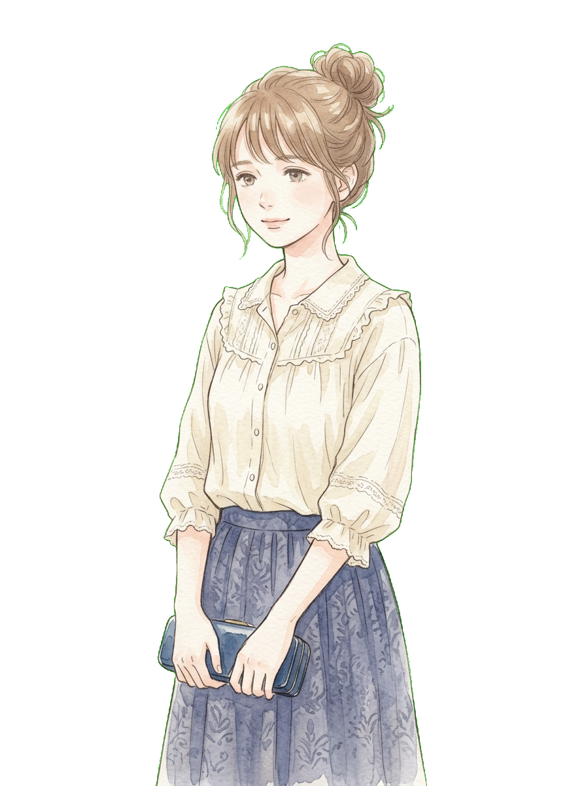
切れ長の目が、笑うとふっと目尻を下げる。明るくおしゃべりだが、恋愛に関しては慎重で、軽はずみにイエスは言わない。 １年時にユタカに告白してフラれており、その傷は本人の中ではすでに過去のはずなのに、目の前にユタカとミヤコさんがいるとどうしても言葉が短くなる。
ふれんちにとっては、２年の冬の告白以来、距離感の取り方を間違え続けてきた相手だ。
本作の正規ヒロインであり、彼女のルートだけが「告白した相手にもう一度告白する」という難しさを正面から扱う。
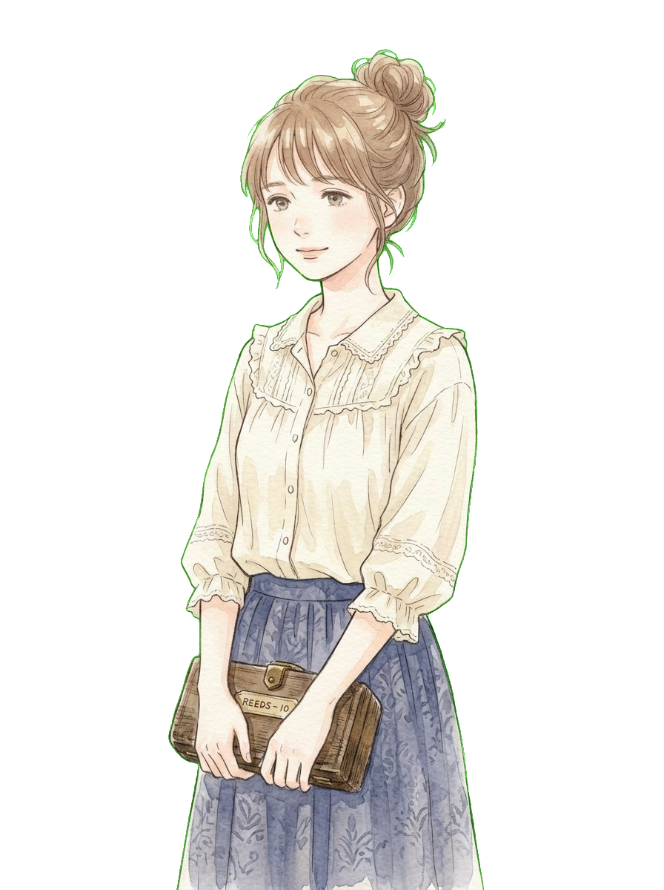
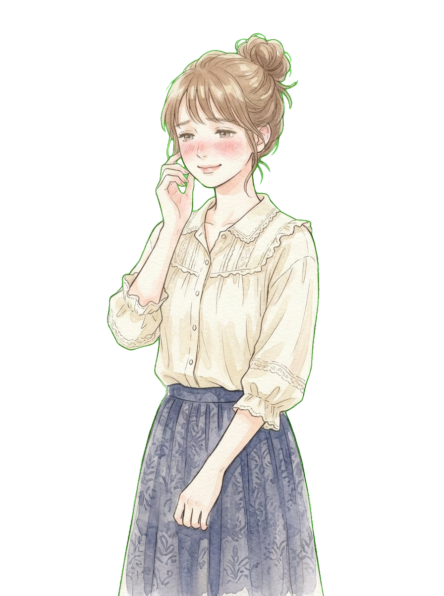
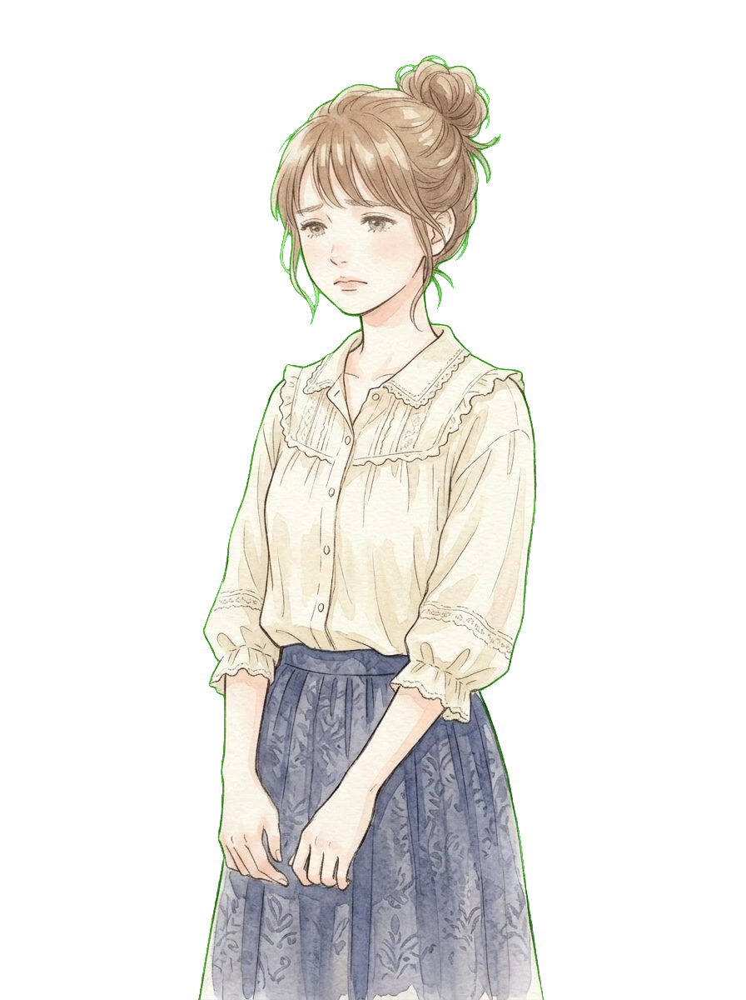
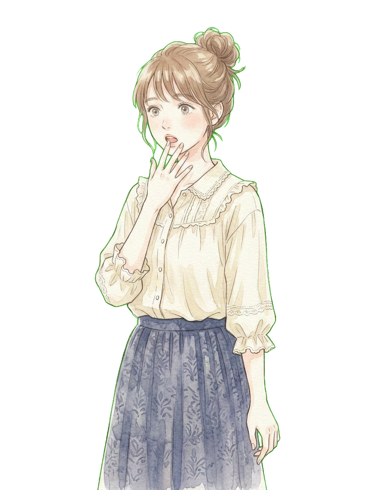
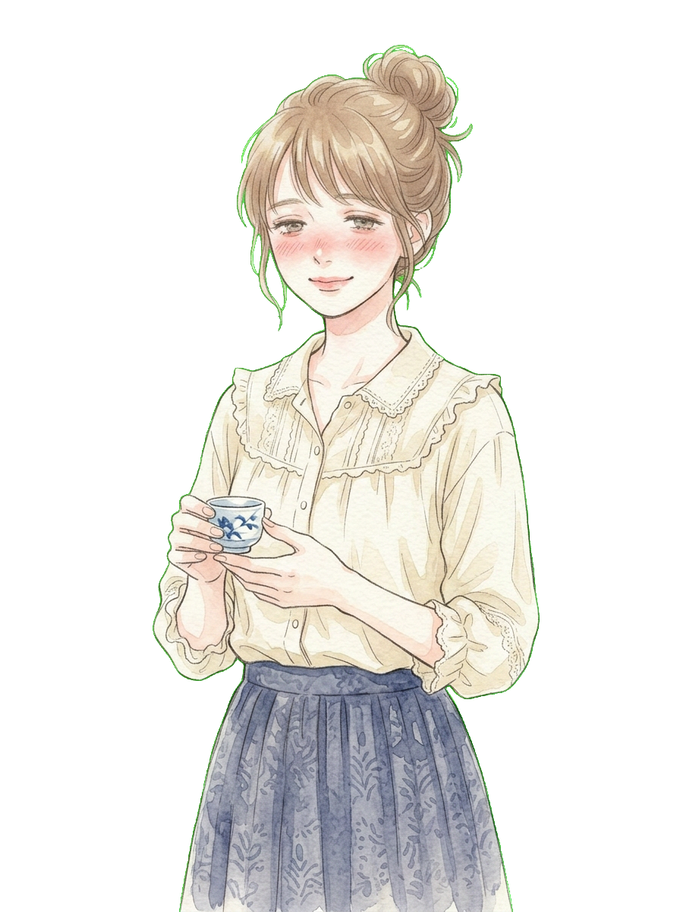
２年冬、ふれんちはミオに告白した。返事は「ごめん、いま、誰とも付き合えない」。 その夜の別れ際を境に、二人のあいだには「気まずさ」というよりは「ぎこちない優しさ」が降り積もっていった。 ３年の６月、ふれんちはミオの隣にいるとき、自分の音量を一段下げる癖がついている。 ──ミオの方は、それに気づいているようなふりをしながら、しっかり気づいている。
| 場面 | 性格が出ている振る舞い |
|---|---|
| 飲み会「わいわい」 | ビールから始めて、最後はだいたい日本酒に着地する |
| パート練の合間 | クラリネットのリードを甘噛みしながらスコアを読む癖がある |
| 銀杏並木 | 葉が散る速度を、不意に語り出す。それは恋愛の比喩ではなく時間の比喩だ |
| 合宿の夜の河原 | 「過去のミオ」を一度だけ自分の口で外に出す |
5-mio-02、5-mio-06 いずれも、自虐側を選ぶとフラグ mio_self_deprecating が立って進行が遅れる。
去年告白して断られた事実を、自分の物語の燃料にできるかどうかが問われる。
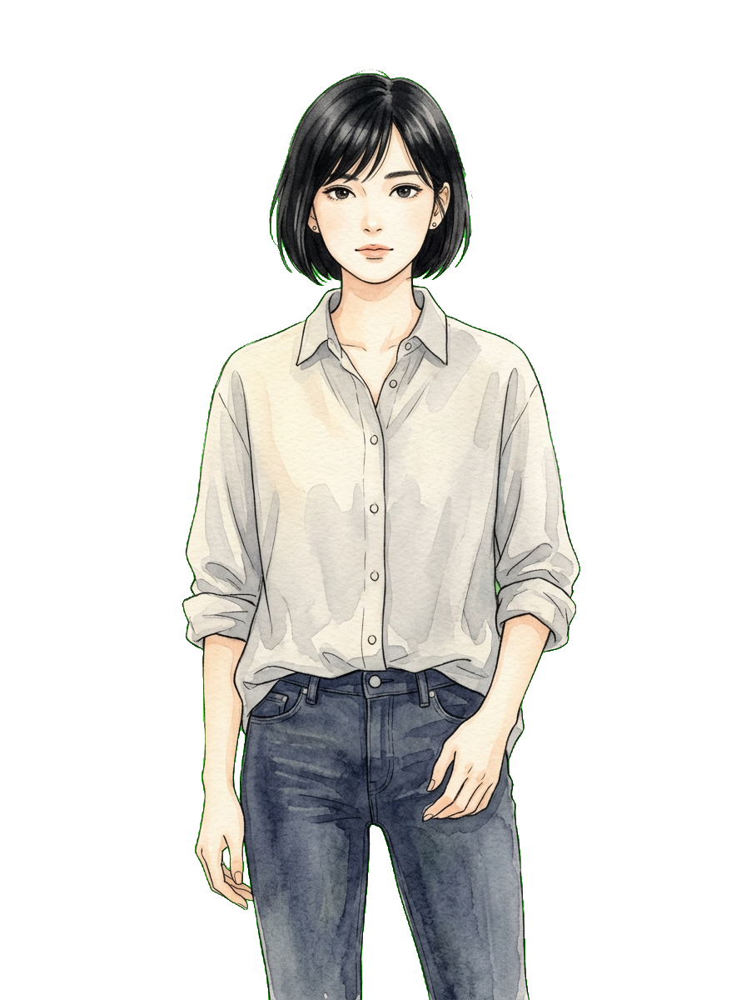
黒髪ショートボブ、凛とした目つき。所作はぶっきらぼうだが、悪意ではなく、誰に対しても同じ角度でぶつかってくる種類の不器用さだ。 ミオの親友であり、周囲からは「ミオの彼氏」と冗談まじりに呼ばれている。
ファゴットの低音はコントラバスとよく合うため、合奏では薫の音とふれんちの音は隣り合う席だ。 薫の方は、その距離感を、一年以上、誰にも気づかれないままに、密かに大事にしてきている。
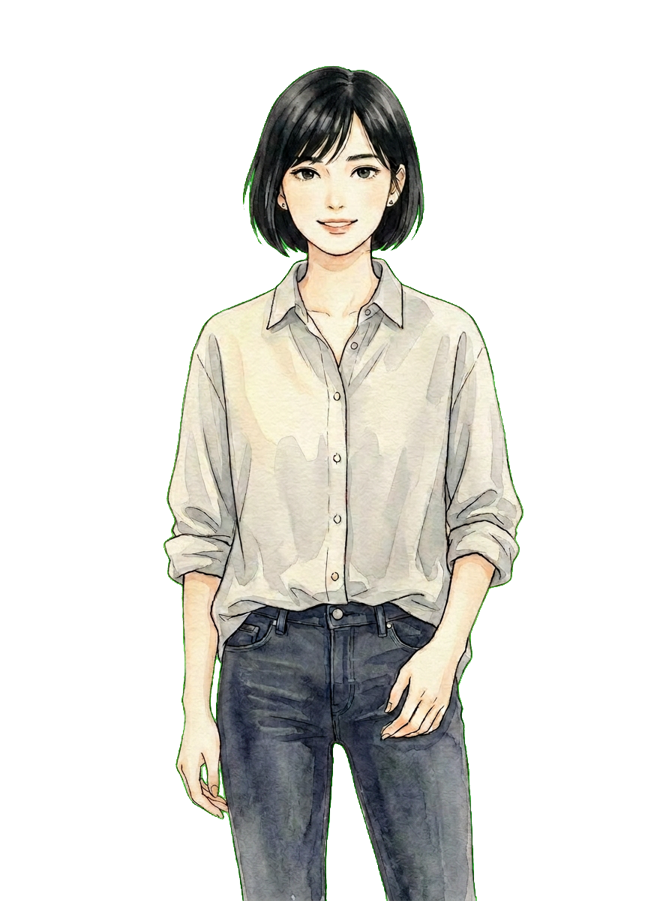
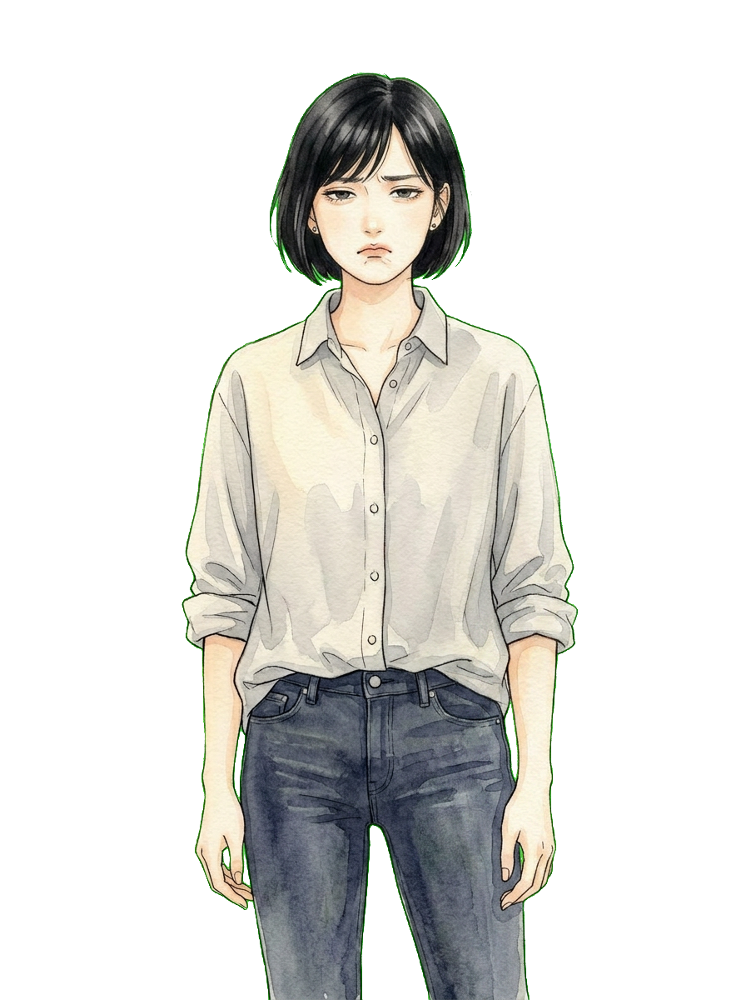
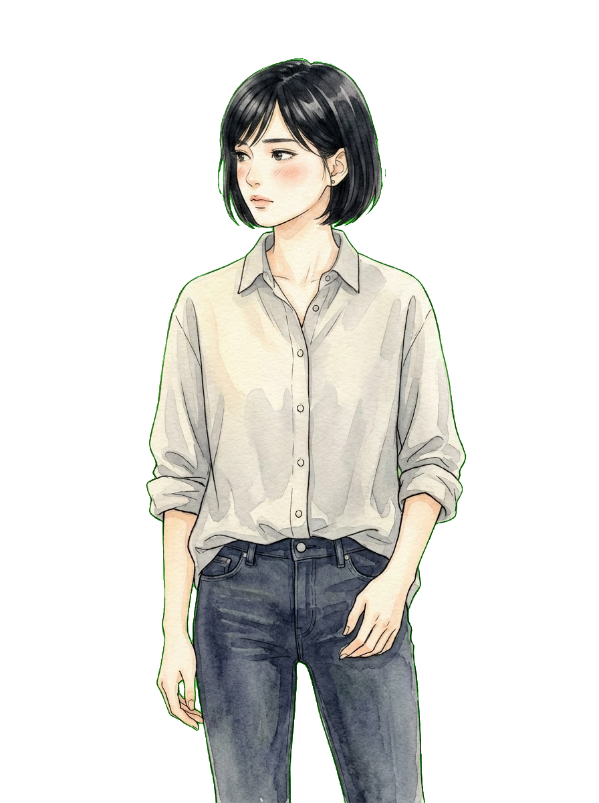
薫はふれんちに対しても容赦がない。「ふれんち、もうちょっと、音を前に出せ」という指導の声は、
パート練の隅でも、廊下で立ち話するときも、温度がほとんど変わらない。
けれどそれは、彼女が誰の音も同じ精度で聴いている、ということでもある。
彼女がふれんちを「面倒な男」と評するとき、その語気はわざと荒い。──本当は、もう少し別のことばで呼びたいのを、まだ自分で許していない。
| 場面 | 性格が出ている振る舞い |
|---|---|
| 練習後の飲み会 | ウーロン茶で、酔った女子の面倒を朝まで見ている |
| 夏合宿のグループ分け | 男子の冗談に乗らず、毅然と訂正する |
| クリスマスイブ | 普段履かないスカートで、ファミレスに現れる |
5-薫-03 でミオへの想いを問われる場面、「……たぶん、もう、違う」 と答えた瞬間に薫ルートが確定する。
ここで「好きだと思う」を選ぶと薫は引いてしまうため、薫ルートに入るには、ミオへの未練を一度自分で言語化して終わらせる必要がある。
丸みのある大きな瞳、眉が下がりがち。弟がいるためか、人を気遣う回路が母性に近い角度で働く。 コントラバスは大学から始めた初心者で、最初の頃は楽器の重さに負けて立ち姿勢を保てなかった。
遠距離恋愛中の彼氏がいる、という事実が、彼女のルートでは静かに強く効く。
ふれんちのことは「優しいお兄さん」として懐いていて、自分から近づいたり、自分から距離を取ったりを、本人もうまく整理できないままに繰り返してしまう。
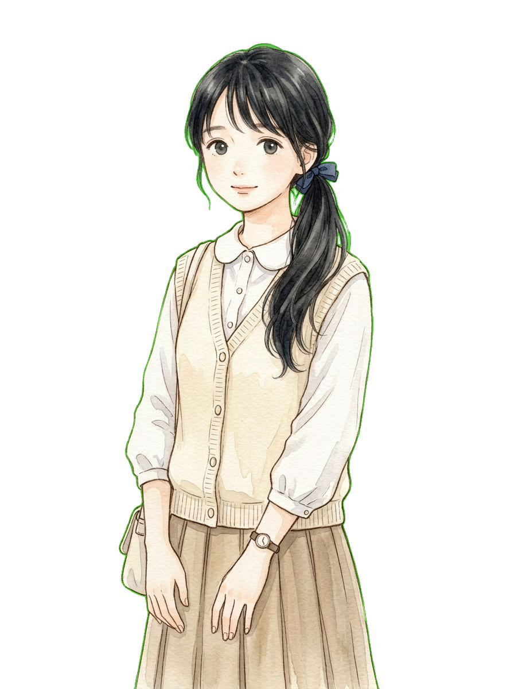
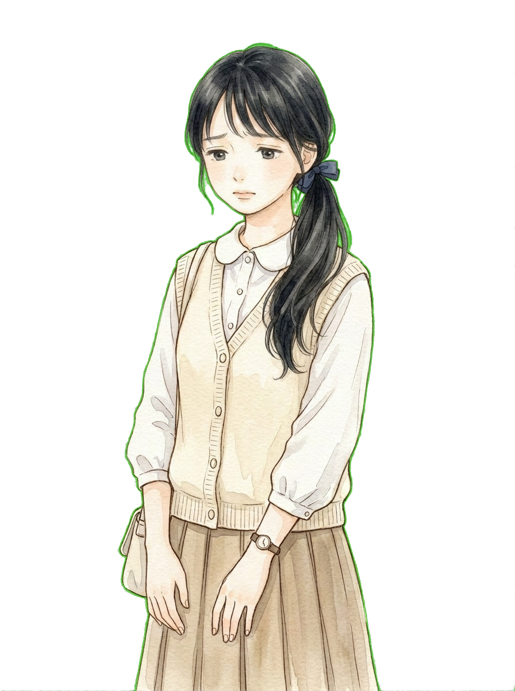
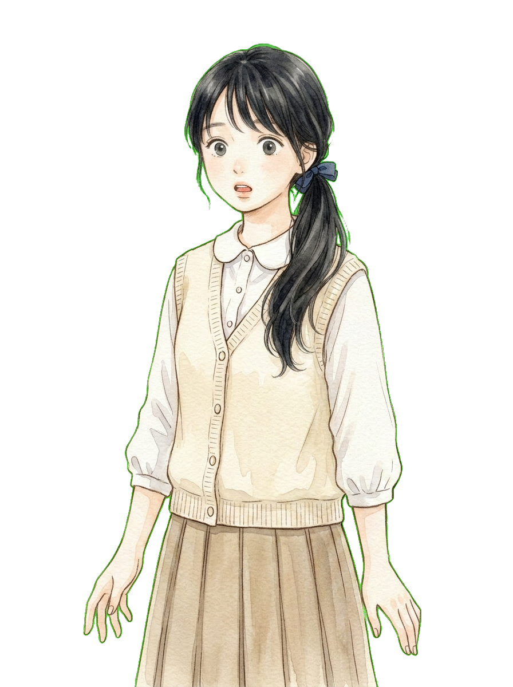
同パートの先輩・後輩であるという立場が、ふれんちとヒマリの関係を最初に決めている。
弓の構え方、左手のフォーム、難しい移弦──低音楽器の悩みは多くがフィジカルに直結するため、教える／教わるの距離が常に身体的に近い。
彼女のルートの中盤、ふれんちは「優しいお兄さんでいることの卑怯さ」に気づく。
渡部が彼女に苦手意識を持たれているのも、その対比として効いている。
| 場面 | 性格が出ている振る舞い |
|---|---|
| パート練の昼休憩 | 持参のお弁当を几帳面に詰めてくる、おかずの種類が常に同じ |
| 遠距離彼氏との電話 | うまく話せない自分を「ダメな彼女ですよね」と先回りして自嘲する |
| イルミネーションの夜 | 不器用さを謝る言葉のあとに、初めてふれんちの名前を呼ぶ |
5-ヒマリ-03、銀杏並木でヒマリが「ふれんちさんって、お兄さん……ですよね？」と尋ねる場面が、彼女のルートの背骨だ。
ここで 「お兄さんじゃなくてもいい？」 を選んだ瞬間、二人の関係は「先輩と後輩」から外れる。
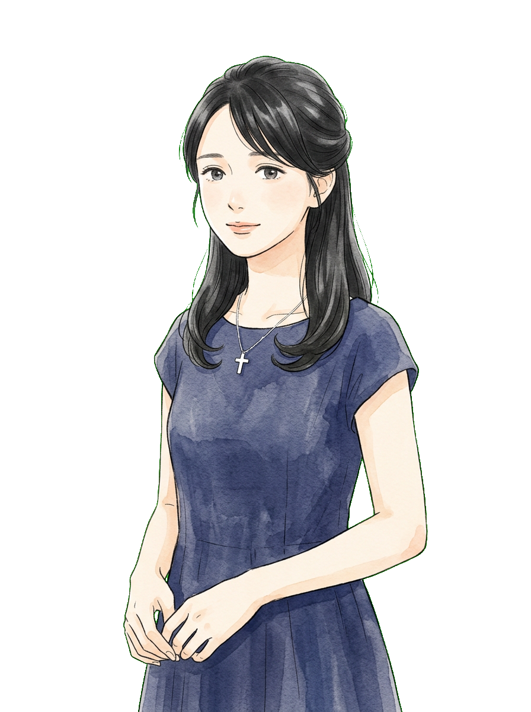
透明感のある立ち姿。やや病弱な印象を受けるが、ドルチェのカウンターでは誰よりも先にカップを並べ替えている。 ほっとくと一人で全部抱え込むタイプ。
2 年の冬のクリスマス、予定がなかったふれんちを誘ってミサに連れて行ってくれた人。 ふれんちはあの夜を「人生で唯一、まともだったクリスマス」と独白で振り返っている。──加藤さんの方は、その独白の存在を、まだ知らない。
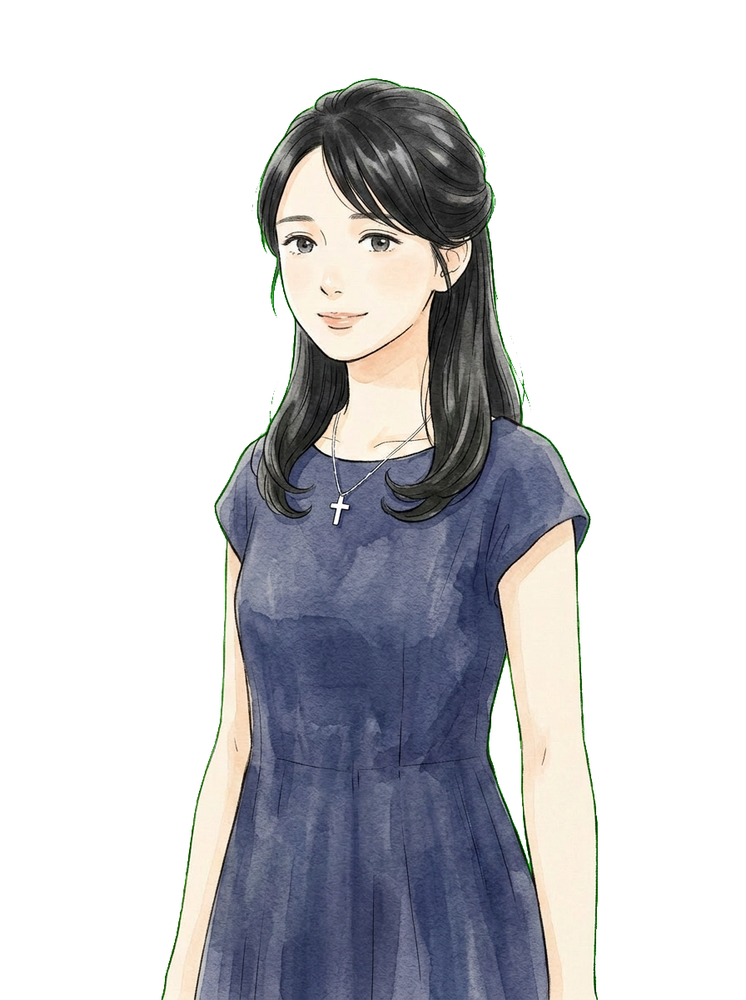
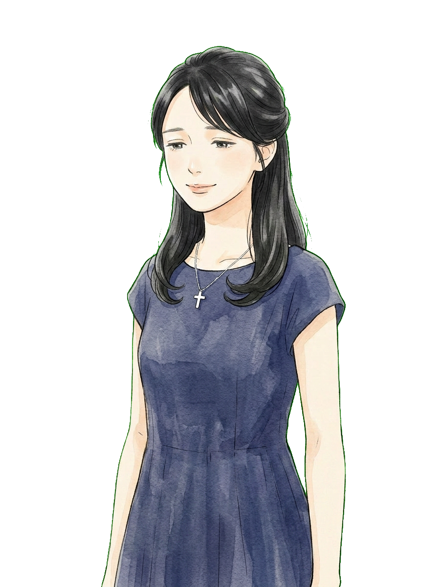
バイトのシフトはユタカと組まれることが多いが、加藤さんはふれんちの方をひそかに気にかけている。
無理して笑っているとき、ちゃんと家に帰っていないとき、コーヒーを淹れる手の早さで分かるらしい。
彼女のルートに入る条件は派手な選択肢ではなく、夏の終わりに教会の祭りを手伝うか、入院したときお見舞いに行くか、といった日常の積み重ねだ。
| 場面 | 性格が出ている振る舞い |
|---|---|
| カフェのクローズ | 洗い物を最後まで一人で残ろうとする。ふれんちが残れば 2 人の沈黙の時間が伸びる |
| 夏祭りの教会 | 子どもたちに焼きそばを取り分ける手つきが、慣れすぎている |
| 入院中の病室 | 「私、実は、ずっと、誰かに病気のことを話したかった」とぽつりと言う |
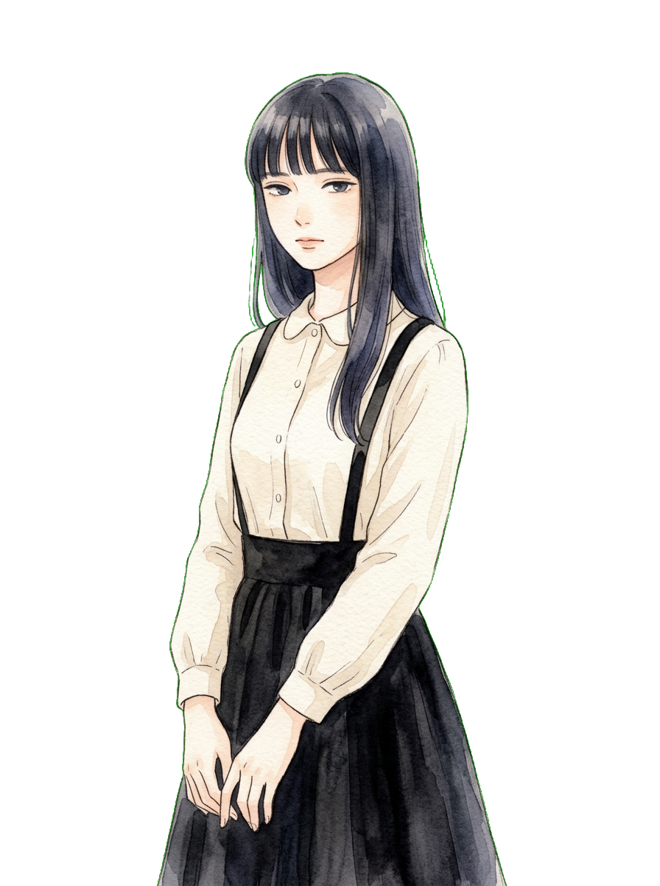
切れ長の目で、表情の起伏は小さい。けれど演奏中だけは別人のような前のめりの音を出す。 音楽センスはオケ団内で頭ひとつ抜けていて、合奏ではしばしば指揮者の前に出る。
２年の頃、ふれんちと一度だけデートをした。その日のことを、彼女は今もブログに匿名で書き残している。 「彼は、ずっと、私の指を見ていた」──その一文を、ふれんちはまだ読んでいない。
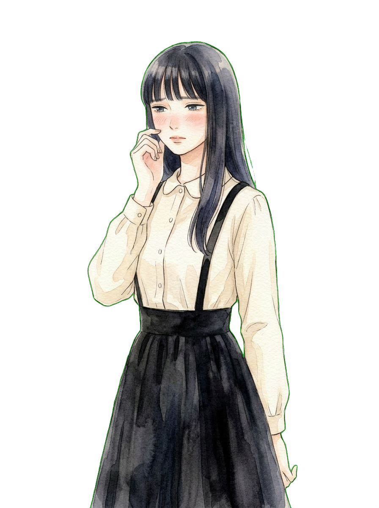
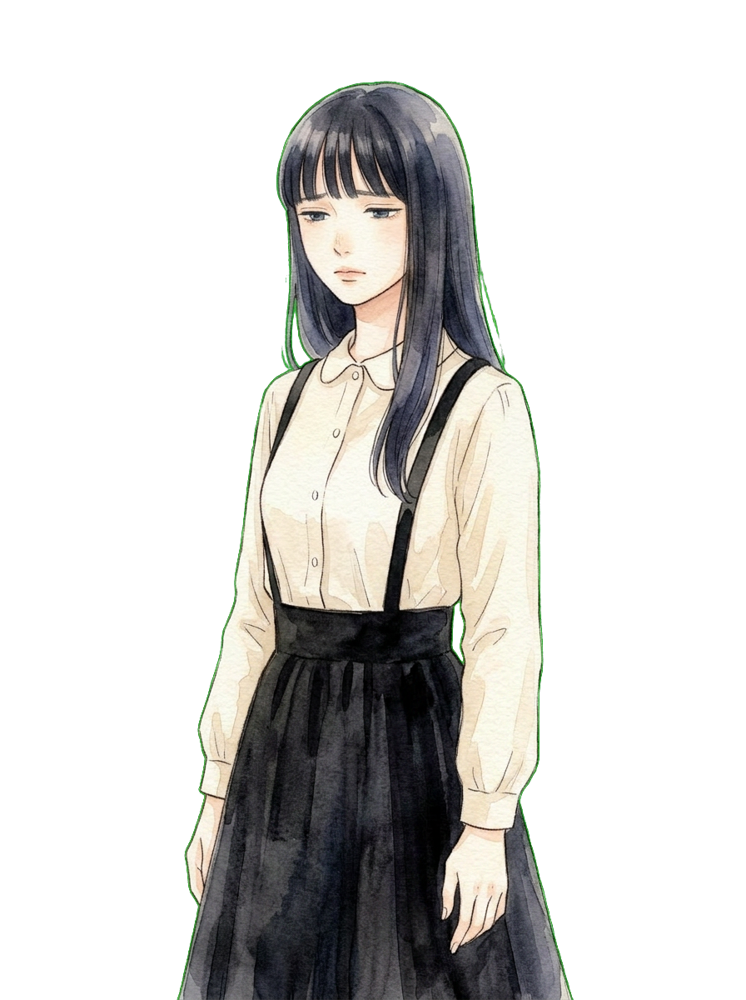
シェリーのルートに入るには、彼女のブログに踏み込みすぎないことが重要だ。 ２年時のデートで「指ばかり見ていた」と感じていた彼女は、自分の音を聴きに来てくれる人を探している。 第 3 章の夜の部室で「読まない方がいい気がして」を選ぶことが、彼女との距離を一段近づける条件になる。
| 場面 | 性格が出ている振る舞い |
|---|---|
| 合奏での出だし | 誰よりも早く弦に弓を当てて、誰よりも先に音を引き取る |
| 飲み会 | 来ない。来てもウーロン茶で 1 時間で帰る |
| 個人練の合間 | 譜面台に消しゴムを 45 度の角度で揃える |
| クリスマスイブ | 2 年前に聴かせたかった CD を、自分の部屋で 2 人で聴く |
垂れ目で、よく笑う。後輩から慕われる先輩で、ふれんちとも仲がいい。 ──そう、仲がいい、というところが、彼女のルートの倫理的な重さの出発点だ。
ミヤコさんは隠しルートのヒロインで、攻略には複数回の相談イベントとミヤコさんへの好感度の積み上げが要る。 そして到達した先には、「親友ユタカを裏切るのか／倫理を選ぶのか」 という二択が待っている。
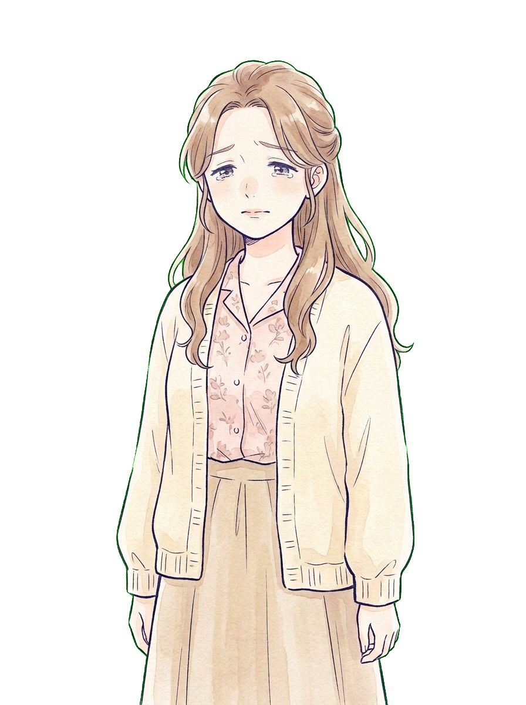
ミヤコさんの方はふれんちを「ユタカの親友」として最初から信頼している。 ユタカが進路で悩み始めたとき、それを彼女に言えなくなったことを、ふれんちにだけは打ち明ける。 「ユタカの代わりに、ミヤコさんを支えたい」という気持ちと、「親友の彼女に手を出すな」という倫理が、ふれんちの中で同時に大きくなっていく。
| 章 | 条件 |
|---|---|
| 第 2 章 | ユタカの「ミヤコの話を聞いてやって」という依頼を引き受ける |
| 第 3 章 | ミヤコさん主体のサブイベントを複数回踏む（電話相談・カフェでの長話） |
| 第 5 章 | ユタカとミヤコさんの破局イベントを目撃する |
| 第 6 章 | 5-ミヤコ-06 「今日、隣に、いてほしい」への応答で、A or B を選ぶ |
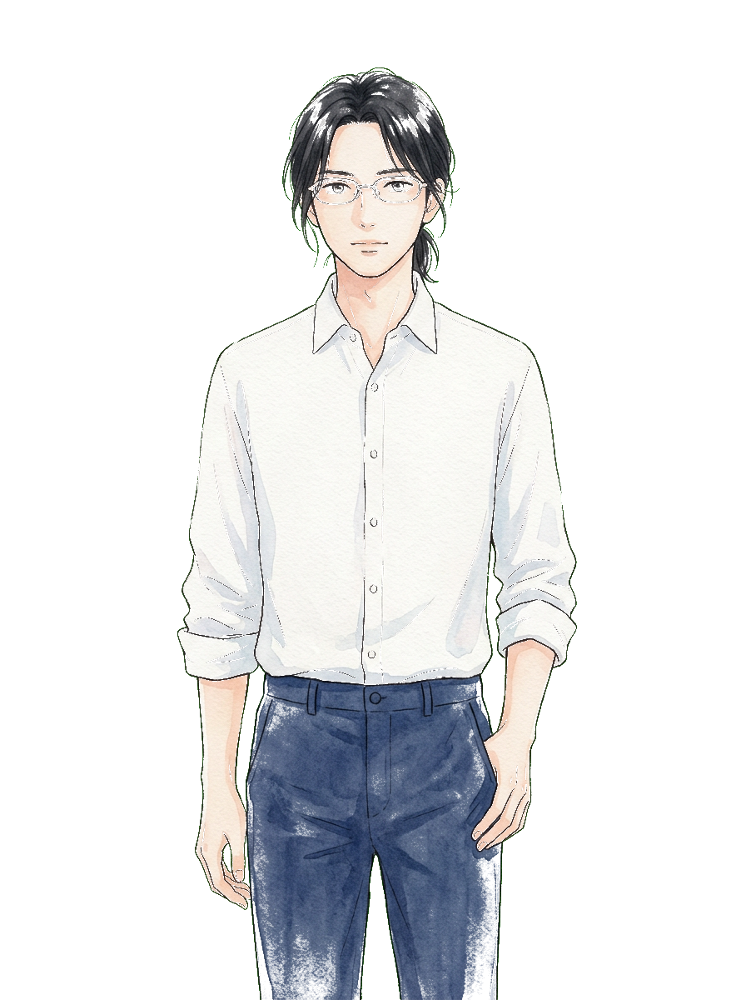
クールで落ち着いていて、楽器の腕も確か。ふれんちの数少ない男友達であり、本作の物語の倫理的な重力を担う存在でもある。 ミオを巡る三角関係でも、ミヤコさんを巡る隠しルートでも、ユタカは画面の外側からふれんちの選択を試し続ける。
本人は気遣いができるが、相手の弱点も見抜いてしまう。 ふれんちが目を泳がせたとき、何も指摘せずに眼鏡を押し上げて、別の話題を振る──という芸当を平然とやる。
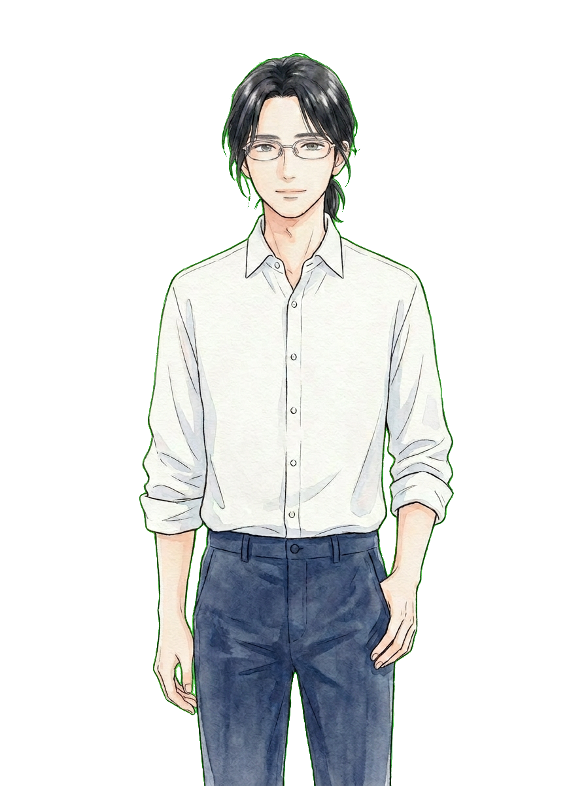
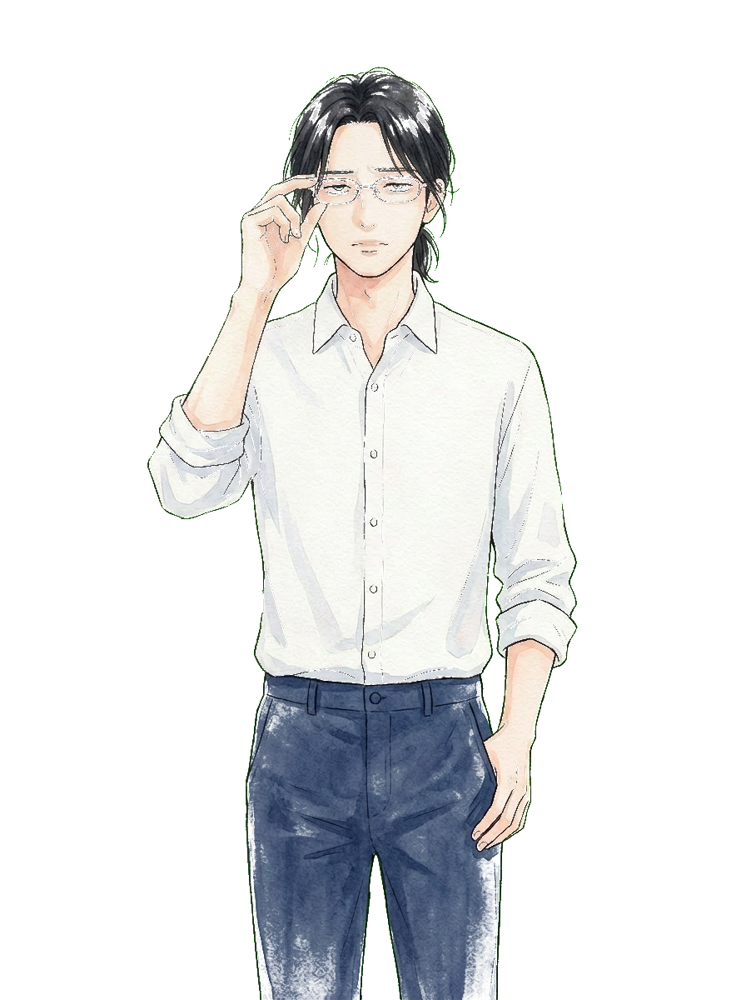
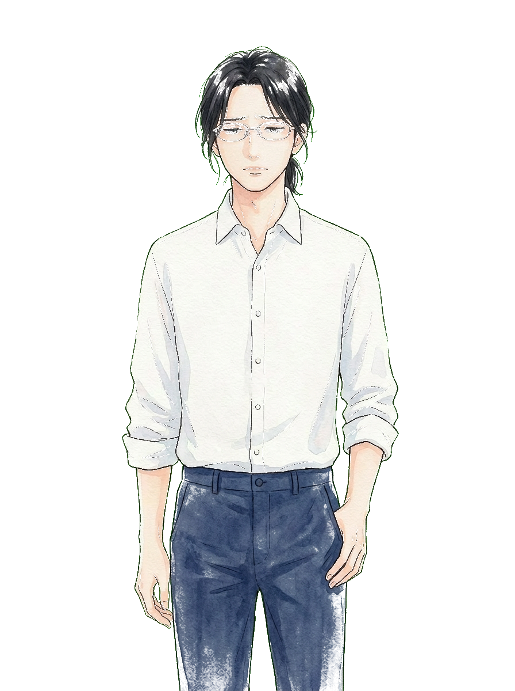
162cm、黒髪肩口ストレート、前髪重め、色白で目を伏せ気味。コントラバスは高校から経験あり、パート内で一番上手い。
1 年時に男子に付き纏われた経験から、男性に対して距離を取るようになった。同期のふれんちにも、現在はほとんど話しかけてこない──のだが、本当はもう一度話せる相手を探している。
表情差分は default / shy / smile の 3 種。彼女が「smile」を出すのは、ルート終盤、本番直前の「よろしくね」の一言だけ。
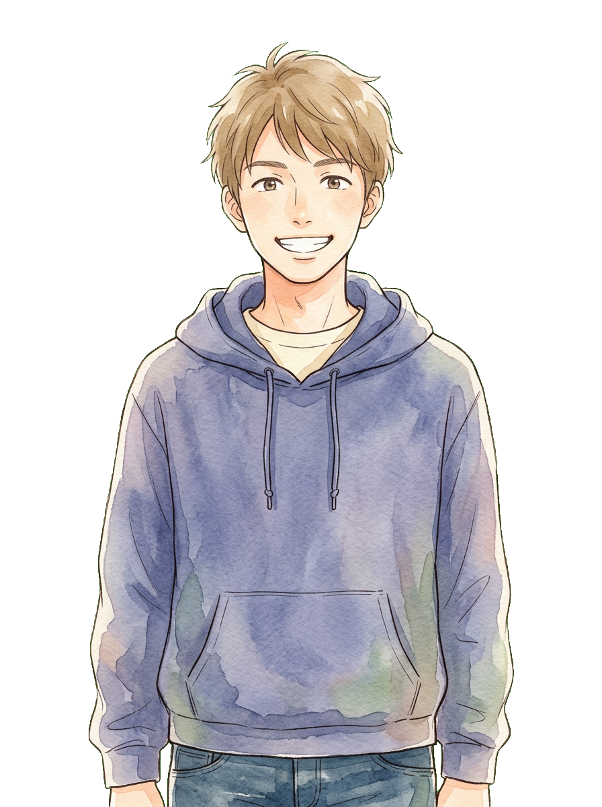
175cm、明るめ茶髪のショート。陽キャでムードメーカー。コントラバスは大学から始めた初心者。
ふれんちとは仲が良く、ユタカとも家が近くてよく一緒に飲んでいる。一方、ヒマリちゃんに対しては距離感が近すぎて煙たがられている。まーちゃんとは違う温度で繋がっており、まーちゃんルートではキー人物になる。
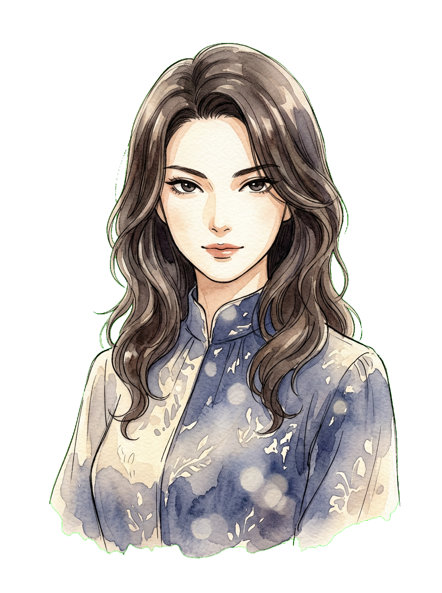
167cm、ダークブラウンの綺麗なウェーブロング。気の強そうな切れ長目。留学経験あり、英語が達者で、指揮するときは容赦がない。
冴えないタイプには関心を示さず、ふれんちのことも基本は眼中にない。フレンドエンドで「あなたは、私の友達です」とメールを送ってくる距離感の遠さが、逆に小さな勲章になる。
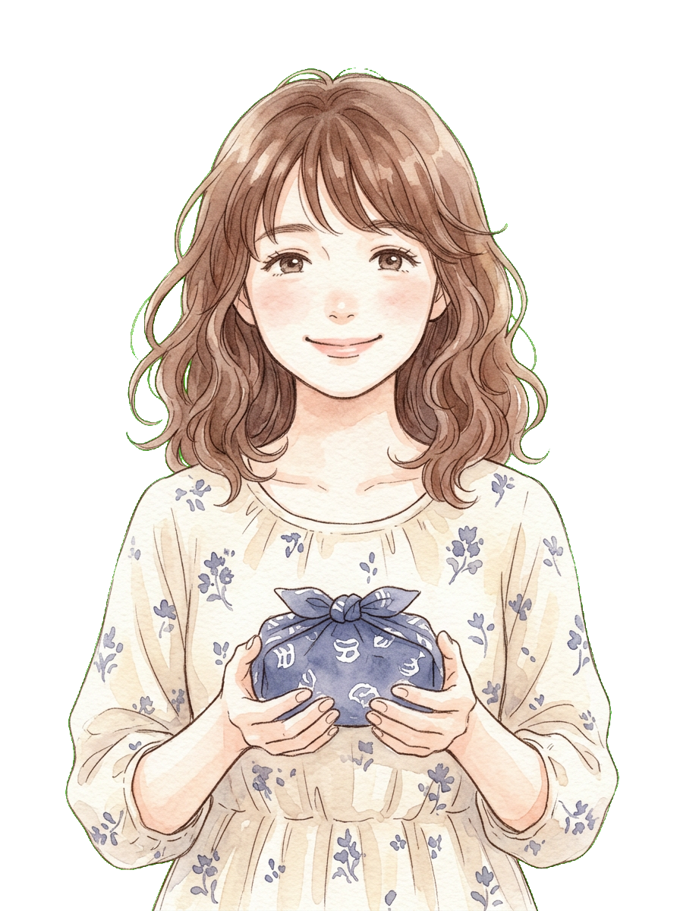
155cm、ゆるくカールした栗色髪。ほんわかした性格、箱入り娘。バイオリンは大学から始めた初心者で、上手くはないが地道に努力している。
渡部と仲良しで、よく一緒に食事をしている。──実はふれんちのことが好きで、渡部にだけは絶対に言わないでくれと頼んでいる。彼女のルートはハッピーには着地せず、友情を優先する選択を経て、静かに離れていくビタースイートな結末を取る。
158cm、黒髪セミロング、赤いフレームのメガネ、丸顔。少し勝ち気な目、負けず嫌い。海外旅行が好き。
男っ気は少ないが、春の飲み会で隣に座ったふれんちに「桜が綺麗な季節なのに私はヒマだ」と切り出して、成り行きで花見に出かけたことがある。Path C・京都旅行の相手で、彼女のルートは「愛のない交際」というノーマルエンドに着地する。
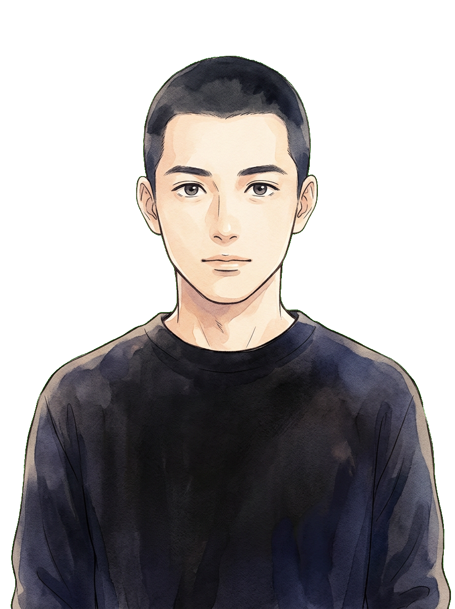
165cm、小柄だが筋力と運動神経はある（元野球少年）。ふれんち以上に不器用で、彼女がいたこともない。
誠実で、楽器の腕も確かなので団長として信頼されている。ミオに片想いで、1 年時に相談を受けた経験がある。学園祭リーダー選出で「平野推し」を選ぶと、ミオを巡る三角関係の歯車がきれいに噛み合う。表情差分は default / smile / trouble。
172cm、茶色いくせ毛、無精ひげが少し見える。ふらふらと頼りない印象だが、飲み会で女子と 2 人で話し込んだりするのが上手い。
女子からは「優しく話を聞いてくれる人」として一定の評価を得ており、薫からはめちゃくちゃ嫌われている。1 年のクリスマス、予定がなかったふれんちを誘ってカラオケに連れて行った張本人。BE-02「長友に出し抜かれる ED」の主役でもある。
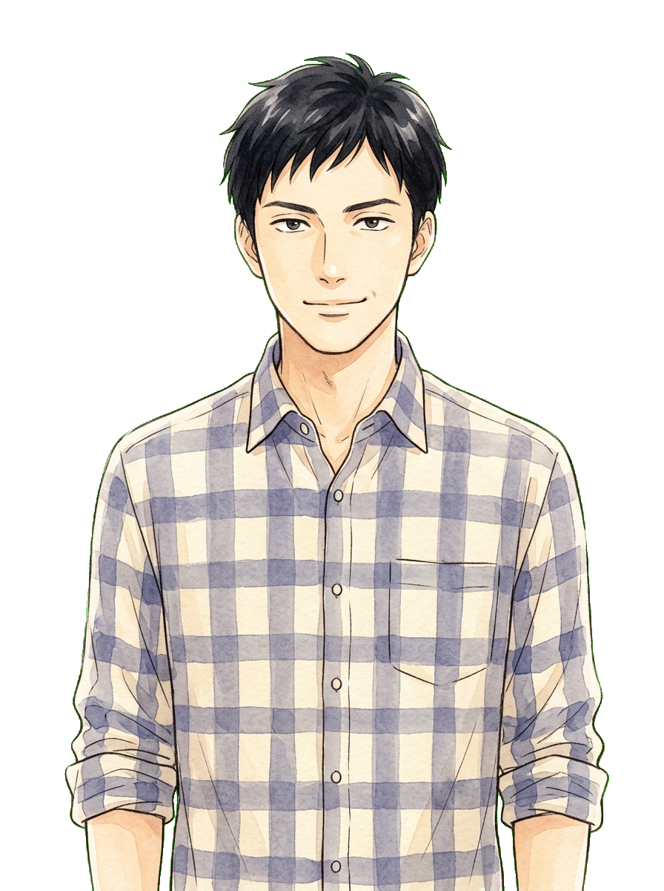
178cm、黒髪短髪、サッカー部らしい日焼け。高校からのオーケストラ経験者で、入学当初は姫ちゃんを狙っていたという噂がある。
渡部や長友とは仲が良いが、ふれんちのことは「情けない奴」と思っており、口角の上がり方がやや皮肉。BE-07「東山に嘲笑される ED」では、姫ちゃんに下手に踏み込んだふれんちを公衆の面前で笑い者にする。
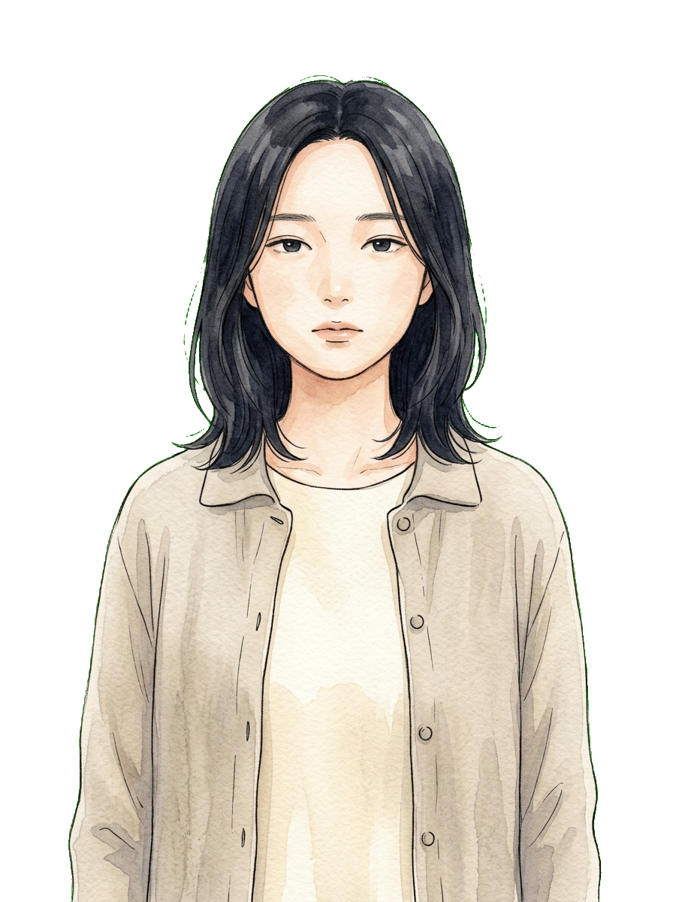
160cm、黒髪ミディアムボブ、切れ長目。ぼそぼそ喋る、飄々とポーカーフェース。中学からの吹奏楽経験者。
必要以上にオケの仲間と関わろうとしないが、意外なことにカラオケが好き。シェリーとはまあまあ仲がいい。彼女のフレンドエンドは「クリスマス、カラオケ、行く？」だけで完結する。──恋愛ではない、しかし孤独でもない、その境界の温度を描く。
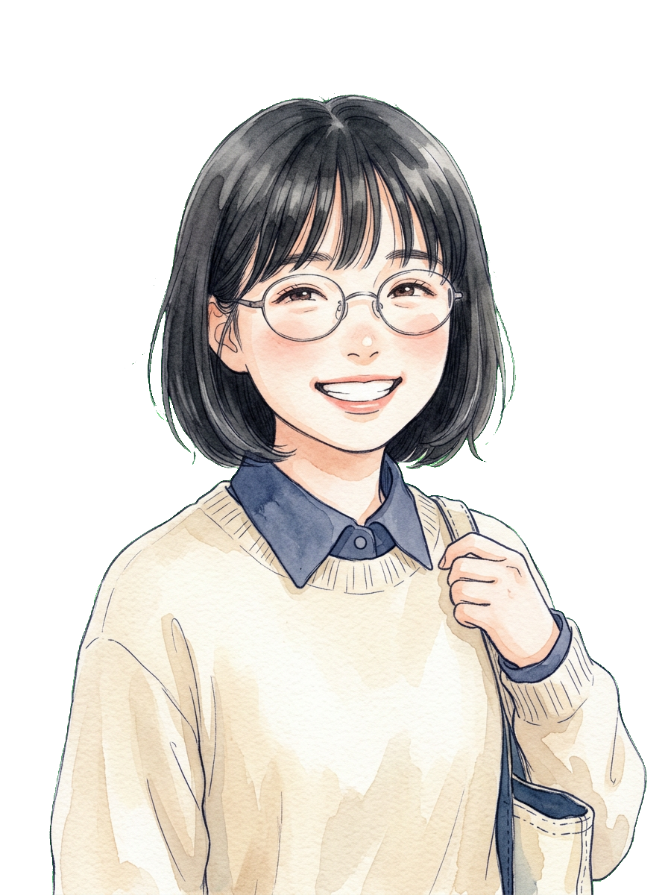
158cm、黒髪ボブ。ニコッと笑う（ちょっとズレた感じ）。空気が読めないことで有名で、男子からはかなり嫌われている。──のだが、実は努力家で、初心者ビオラを地道に練習し、公認会計士の勉強もしている。
シェリーだけは彼女に優しい。本作には固有のルートを持たないが、ヨコノを見る目線がふれんちのスタンスを静かに測るリトマス試験紙になる。
プロローグから第 4 章「学園祭当日」までは、すべてのプレイヤーが共通で通る。 その間に踏まれた選択肢が、第 5 章開始時点での「内部状態」を決め、第 6 章のクライマックスでルートが収束する。
| 場面 | 場面ID | 影響 |
|---|---|---|
| ユタカとの距離 | P-02-01 | ユタカ信頼度 ±1。ミヤコさんルートの解禁条件にも関わる |
| 中野さんの譜面 | P-04-01 | 中野ルート入口。「ついでに取る」を選ばないと中野ルートはほぼ閉ざされる |
| 加藤さんへの返答 | P-07-01 | 加藤さん好感度 +1〜+2。彼女のルートの最初の一歩 |
| ミオへの本心 | P-08-01 | フラグ mio_love_flag。ミオルートの基本姿勢を決める ★最重要 |
練習後の飲み会が、初の「全ヒロイン同席イベント」になる。 昼食、座る位置、酔った人の介抱役、終電の見送り役──ここで踏んだ選択は、夏休みの Path 選択時に発射台として機能する。
夏休みの過ごし方を選ぶハブ画面で、ルートの「種」が撒かれる。詳しくは次ページの最重要分岐②を参照。
9〜10 月。学園祭リーダーをどう選ぶか（3-02）が、団としての成功度と全ヒロイン好感度の両方に同時に効く最重要分岐。
そしてもう一つ、「個人練を誰と組むか」が、第 5 章開始時点でのルート確定の最終ボタンになる。
接客シフトの相手によって台詞が分岐し、ルートに応じた CG・小イベントが解放される。すでに開いているルートを補強する章で、新しいルートはここでは開かない。
P-08-01プロローグの最終盤、ふれんちは独白の形で「ミオへの今の気持ち」をプレイヤーに尋ねられる。 この一手は、ゲーム全体の方角を決める 羅針盤 として働く。
ふれんち──去年の冬、俺は、ミオに告白して、フラれた。
あれから、半年以上が経って、いま、俺は、ミオのことを、どう思ってる？
| 選択肢 | 立ちフラグ・好感度 | 後段への影響 |
|---|---|---|
| A. ミオのこと、好きだと思う | mio_love_flag = true / mio +1 | ミオルート前向き。第 5 章でユタカからの応援を素直に受けやすくなる |
| B. もう過去のことだ | kaoru +1 / sherry +1 | ミオの未練を切る代わりに、薫・シェリーへの可能性が開ける |
| C. 自分でもよく、わからない | ── | 中立。ただし第 2 章での Path 選択次第でどちらにも転べるユーティリティ |
5-mio-07）5-mio-06）2-HUB第 2 章のハブ画面。8 月をどう過ごすかが 4 系統に分岐する。 各 Path はそのまま「親しくなる相手」のグループを決め、第 3 章以降の個人練習の選択肢にも差を付ける。
| Path | 過ごし方 | 主に好感度が上がるキャラ | 到達しやすいルート |
|---|---|---|---|
| A | 長野で免許合宿 | ミオ、薫 | ミオ正規ルート、薫ルート |
| B | 東京に残ってバイト中心 | 加藤さん、シェリー | 加藤さんルート、シェリールート |
| C | 愛ちゃんと京都旅行／姫ちゃんと松本 | 愛ちゃん、姫ちゃん | 愛ちゃんルート、姫ちゃんフレンドエンド |
| D | 実家に帰省 | 中野さん（メールでの再接続） | 中野さんルート、加藤さんルートの延長 |
教習所の合宿所、河原の星空（mio_riverbank.png）。
2-A05 でミオから「話、聞きたい？」と誘われる場面が、ミオルートを正式に開ける鍵だ。
薫もこの Path で同行することがあり、ミオを断った場合の薫好感度上昇が無視できない。
ドルチェの夏営業、教会の夏祭り、シェリーとの偶然の再会。 Path A の華やかさはないが、第 5 章で「あれだけ一緒にいたよね」と効いてくる積み立て型の Path。
Path C は愛ちゃんルート（ノーマル）、姫ちゃんルート（フレンド）への定番経路。 Path D は中野さんとのメールでの再接続を経て、12 月の救済ルートにつながる。 どちらも「メインヒロインを攻略する」目的では遠回りになるが、サブルートを丁寧に拾うには欠かせない。
3-02第 3 章、10 月。学園祭「あんだんて」の運営リーダーを誰に任せるか。 たかが運営の一票──と侮るなかれ、この選択は 団全体の信頼度 と 個別ルート進行 の両方に同時に効く。
| 選択 | 主な効果 | 相性のいいルート／注意点 |
|---|---|---|
| A. 平野推し | 団長として安定運営。全キャラ好感度が緩やかに上昇 | ミオ／薫／加藤さん／シェリー全般。最も安全 |
| B. 自ら立候補 | 全ヒロイン尊敬フラグ。ただし時間が削られて個人練の機会が 1 つ減る | ヒマリ／中野さん／ミヤコさん。リソース不足には注意 |
| C. 長友推し | 運営は崩れないが、ミオ・姫ちゃんに不穏の影。BE-02 への分岐を含む | 非推奨。意図的にバッドエンドを踏みたいときのみ |
| D. 誰もやらないでいい | BE-06「学園祭崩壊 ED」の入口。団員の信頼を失う | 非推奨 |
平野はミオに片想いしていることが事前に開示されている。彼にリーダーを任せると、 平野はミオの前で頼れる先輩として振る舞うことに集中し、結果としてミオは「ふれんちの方を見る」時間が静かに増える。 薫は「平野はちゃんと仕事をする」と評価し、加藤さん／シェリーはふれんちの「自分は出しゃばらない」判断を好意的に受け止める。 全方向に角が立たない、という意味で 共通ルート最強の安全牌 だ。
ヒマリちゃんは「先輩がリーダーになるなんて、すごい」と尊敬の目になり、 ミヤコさんは「自分から動ける後輩、好きだな」と微笑む。 ただしリーダー業務の分だけ第 5 章での個人練習の機会が一つ削られるため、 銀杏カウンターを早めに使い切るリスクと隣り合わせだ。
| 章 | 条件 |
|---|---|
| プロローグ | P-08-01 で「ミオのこと、好きだと思う」を選択（フラグ mio_love_flag） |
| 第 1 章 | 飲み会「わいわい」でミオの会話を逸らさない（mio +1 を 2 回以上） |
| 第 2 章 | Path A（免許合宿）を選択。2-A05 で「ミオの話、聞きたい」 |
| 第 3 章 | 3-02 学園祭リーダー選出で「平野推し」or「自ら立候補」（長友推しは NG） |
| 第 5 章 | ミオ好感度 +3 以上を維持。5-mio-02 で自虐選択肢 C を避ける |
| 第 6 章 | 5-mio-06 で A「話したいことがある」を選ぶ |
5-ミオ-01
練習後の廊下、ミオが「ふれんちのコントラバス、ちょっと上手くなったね」と零す。夏合宿が地味に効いていた、というふれんちの内省が初めて自己肯定の方向に転ぶ。
5-ミオ-02
バイト帰り、ユタカが「ミオ、お前のこと、見てる」と告げる。ここで 選択肢 C「俺、まだミオに値する男じゃない」 を選ぶとフラグ mio_self_deprecating が立ち、後段の進行が二段階遅れる。A「ユタカ、ありがとう」が正解。
5-ミオ-03
並木が完全に黄に染まった日、ミオと並んで歩く。「葉が散ったら、もう冬だね」。ふれんちの内的独白：「葉が散るまでに、俺は、何か、言えるだろうか」。
5-ミオ-04
ピツィカートが難所のチャイコ 5 番 2 楽章。リハ後、ミオが楽器置き場で泣きそうな顔をしている。「ユタカ、今日、ミヤコさんと別れたって」──ここでミオがふれんちに本音を漏らす。
5-ミオ-05
プロコフィエフ《シンデレラ》、ラフマニノフ、チャイコ 5 番。例年以上の出来。CG concert_winter.png が解放される。
5-ミオ-06
ユタカ自ら「俺のせい」と認める。ミオは短く謝罪し、ユタカは「俺は、ふれんちの味方だ」と告げる。選択肢 A「ミオに『話したいことがある』と言う」 でフラグ mio_ask_talk が立つ。B/C は遅延・後退。
5-ミオ-07
葉が、ほとんど散った日。並木の下で、ふれんちはミオを呼び出す。──ここで言うのは「付き合ってください」ではない。
ふれんちミオ。俺、もう一度、言うね。
ミオ……うん。
ふれんちミオのこと、好きだ。去年の冬と、同じ気持ちだ。
でも、今日は、『つきあってください』じゃなくて、
『これから、俺のペースで、お前のことを、好きでいさせてくれ』って言いに来た。
ミオ……なに、それ。
ふれんち俺、自分に自信がないから、去年みたいに、焦って言って、失敗したくない。だから、ペースをもらいたい。
ミオ……ふれんち、ずるくなったね。
……いいよ。私も、自分のペースで、ふれんちのこと、ちゃんと、見る。
まだ「付き合う」の言葉は交わされていない。それでも、ミオから「ドルチェで、夜ごはん、食べない？」と誘いが届く。 その日加藤さんはミサで不在、店長が「貸し切り状態ね」と笑ってくれる。
ミオふれんちは、私の彼氏に、なりたいの？
ふれんち……なりたい。
ミオじゃあ、なりなよ。
もう、今日から、彼氏。ダメ？
ふれんち……ダメじゃ、ない。
銀杏並木の葉は、完全に散った。
でも、俺は、今年、たぶん、少しだけ、リア充だ。
| 章 | 条件 |
|---|---|
| プロローグ | P-08-01 で B「もう過去のことだ」を推奨（mio_love_flag を立てない） |
| 第 1 章 | 「わいわい」での選択肢で「薫推し」系を複数回選ぶ（kaoru +1 を 3 回以上） |
| 第 2 章 | Path B（バイト中心）を選択。ミオへの執着を相対的に薄める |
| 第 3 章 | 個人練習で「薫を誘う」、合奏で「薫に忘れ物を託す」を選ぶ |
| 第 5 章 | 5-薫-03 で A「……たぶん、もう、違う」を選択（★ ルート確定の決定打） |
5-薫-01
ファゴットとコントラバスの 2 人練。「お前の音、嫌いじゃない」。薫の言葉のなかで最も低い温度の褒め言葉。
5-薫-02
廊下で薫がミオに「ふれんちのこと、面倒な男だな、と思ってる」と答える。続く一言──「それ以上を、今、言いたくない」。
5-薫-03
「ふれんち。お前、ミオのこと、まだ好きか？」── A「もう違う」を選ぶと薫ルート確定。C「好きだと思う」を選ぶと「じゃあ、私のことは、関係ないな」と引かれて終わる。
5-薫-04 〜 5-薫-05
「私、『ミオの彼氏』って言われ続けてきた。でも、本当は、恋愛対象として好きな相手は、別にいる──お前だ、ふれんち」。返事は今は要らない、とだけ薫は言う。
雪がちらつく夜、薫は珍しくスカートを履いて、大学近くのファミレスに現れる。
「似合わないだろ」「いや、似合ってる」「無理すんな」「本当に似合ってる」。
ふれんち薫。告白の返事、今日、言ってもいい？
ふれんち俺、お前のこと、ずっと頼りにしてた。頼りにするだけじゃなくて、
俺からも、お前を頼らせてもらえるなら、付き合ってください。
薫……お前、そういう言い方、するのね。
……わかった。よろしく。
薫は、俺の隣で、俺より背が高い。
でも、それも、悪くないんだ、と気づいた。
| 章 | 条件 |
|---|---|
| 第 1 章 | 1-01 で「ヒマリちゃんに『気にしないで』とフォロー」 |
| 第 3 章 | 誕生日イベントで「話聞くよ」、個人練を「ヒマリちゃんと」 |
| 第 5 章 | ヒマリ好感度 +3 以上、5-ヒマリ-03 で B「お兄さん、じゃなくてもいい？」を選ぶ |
5-ヒマリ-01
ヒマリの遠距離彼氏が浮気していた、と本人から告げられる。彼女が泣くのを、ふれんちは初めて見る。
5-ヒマリ-02
パート練で、ふれんちが初心者の気持ちを理解していることを示す。「俺も、最初、Gの音出すだけで30分かかった」。同じ楽器を共にする者だけが交わせる、低い周波数の慰め。
5-ヒマリ-03
ヒマリちゃんが「ふれんちさんって、お兄さん……ですよね？」と尋ねる。B「お兄さん、じゃなくてもいい？」 を選ぶとヒマリは目を逸らさない。──ルート確定。
5-ヒマリ-04
「ふれんちさんに、見ててほしかった」。本番で間違えなかった自分を、嬉しそうに、誇らしげに、ふれんちにだけ報告する。
学校近くのイルミネーション。ヒマリちゃんは自分の不器用さを、ふれんちに詫びる。 「不器用、嫌いじゃない。俺も、不器用だから」。
ヒマリふれんちさん、彼女、いないですか。
ふれんちいないよ。
ヒマリ……じゃあ、私、なってもいいですか。
ふれんち……いいよ。
ヒマリちゃんは、不器用だけど、真っ直ぐで、
俺は、その真っ直ぐさに、救われた。
| 章 | 条件 |
|---|---|
| プロローグ | P-07-01 で加藤さんに肯定的な返答 |
| 第 1 〜 3 章 | 加藤さん好感度を +5 以上に積む。教会の夏祭り手伝いを引き受ける |
| 第 2 章 | Path B 推奨（バイトのシフトが増える） |
| 第 3 章 | 入院イベントで「お見舞いに行く」を選ぶ |
| 第 5 章 | 持病の話題から逃げない選択肢を選び続ける |
5-加藤-01
病室で加藤さんが小さく笑う。「ふれんち君、お見舞い、ありがとう」──持病のこと、将来的にずっと付き合う必要があることを、初めてちゃんと話す。
5-加藤-02
ふれんちは加藤さんを、「大人の女性」としてではなく、「一人の人」として見るようになる。視点の切り替えが、台詞の温度の細部に出る。
5-加藤-03
「ふれんち、加藤さん、真剣か？」「……真剣、だと思う」「……それなら、俺は何も言わない」。ユタカの審査を一度通る。
5-加藤-04
客席から聴きに来てくれた加藤さんが、楽屋で「ふれんち君、音、変わったね」「あなたの人生の音が、聞こえたよ」と告げる。
去年と同じ教会のミサ。今年はふれんちが加藤さんの隣で、手を握りたい、と思う──ミサの間は握らない。 終わってから、教会の中庭で、ふれんちが言う。
ふれんち加藤さん。俺と、付き合ってください。
加藤さん……ふれんち君、ね。
加藤さん私、この先、ずっと、元気に働ける保証がないよ。
子ども、作れるかもわからない。
ふれんち知ってます。
加藤さん……それでも、？
ふれんちそれでも。
加藤さん……じゃあ、……はい。
加藤さんは、ずっと、俺にとって、優しいお姉さんだった。
今日から、俺の、かけがえのない人になった。
| 章 | 条件 |
|---|---|
| 第 2 章 | Path B（バイト中心）でシェリーと再会 |
| 第 3 章 | 夜の部室イベントで「読まない方がいい気がして」を選ぶ（ブログを覗かない） |
| 第 5 章 | シェリー好感度 +3 以上を維持 |
5-シェリー-01
シェリーが、自分のブログを見せると言う。2 年生のとき、ふれんちとデートした日の記事──「彼は、ずっと、私の指を見ていた」。ふれんち：「俺、そんな、変態みたいだったの？」 シェリー：「変態じゃない。──音楽を見てくれる人が、欲しかった、ってだけ」。
5-シェリー-02
個人練でバッハのチェロ組曲を、即興で合わせる。シェリーの音がふれんちの音を完全に包み込む。「俺、この子の音に、ずっと、憧れてた」。
5-シェリー-03
打ち上げに来ないシェリーを、ふれんちが探しに行く。「あなたの時間を。私と、クリスマスを過ごすという時間を」──控えめな表現の、最大限の踏み込み。
シェリーの 1 人暮らしのアパートは、潔癖な彼女らしく、びっくりするほど清潔。 けれど本棚の 1 段だけ、埃をかぶった CD が並んでいる──それは「2 年の冬にふれんちに聴いてほしかった CD」。 2 人で、グールドのバッハを、最初から、最後まで、聴く。
シェリーメリークリスマス。
今年は、1 人じゃないよ、私。
2 年前、聴かせたかった CD を、3 年後に、2 人で聴いた。
音は、たぶん、最初から、彼女の方を待っていた。
| 章 | 条件 |
|---|---|
| 第 2 章 | ユタカからの「ミヤコの話を聞いてやって」を引き受ける（ユタカ信頼 +1） |
| 第 3 章 | ミヤコさんからの電話相談・カフェでの長話を 2 回以上引き受ける |
| 第 5 章 | ユタカとミヤコさんの破局イベントを目撃。ミヤコさん好感度 +5 以上 |
| 第 6 章 | 5-ミヤコ-06 「今日、隣に、いてほしい」への応答で A or B を選ぶ |
5-ミヤコ-01
ユタカがバイトを急に休むようになる。進路（院進学 or 就職）の悩みを、彼はミヤコさんには言えていない。
5-ミヤコ-02 〜 03
ミヤコさんが「ふれんち君、今、話せる？」と電話してくる。「ユタカの代わりにミヤコさんを支えたい」と「親友の彼女に手を出すな」がふれんちの中で同時に大きくなっていく。
5-ミヤコ-04
ユタカが言えなかった本音を、ミヤコさんが受け止めきれず、12 月上旬に正式に別れる。
5-ミヤコ-05
打ち上げに来ない彼女を、ふれんちが心配して訪ねる。「大丈夫じゃない、かも」。
5-ミヤコ-06ミヤコふれんち君、私のこと、好き？
ふれんち……わからない。でも、今日、貴方のそばにいたい、と思った。
ミヤコそれで、いい。
ユタカとは、もう、昔のように話せないかもしれない。
それでも、俺は、今日の選択を、間違いとは思いたくなかった。
ふれんちミヤコさん、俺、あなたの話を聞ける人間ではあっても、
あなたの夜に、いていい人間じゃない。
ミヤコ……わかってる。でも、……ありがとう。
俺は、ユタカの親友のまま、ミヤコさんと距離を保った。
クリスマスの夜、俺は、1 人で、アパートに戻った。
でも、友情は、守られた。
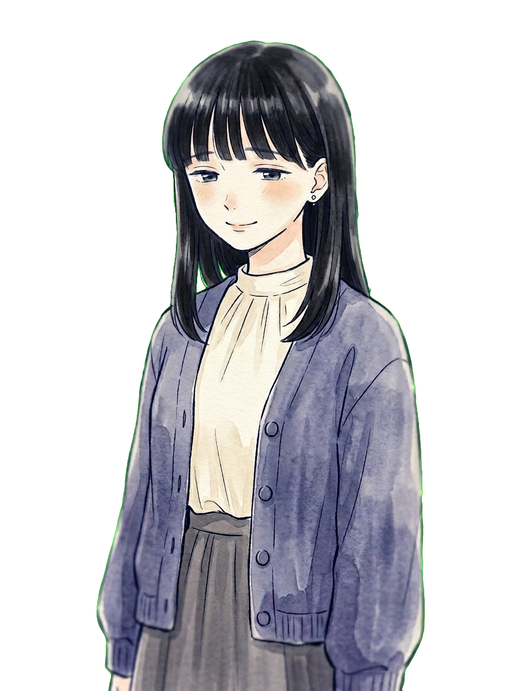
| 章 | 条件 |
|---|---|
| プロローグ | P-04-01 で「中野さんの譜面をついでに取る」（中野ルート入口） |
| 第 2 章 | Path D（帰省）でメール再接続、または Path B のコンビニで再会 |
| 第 3 章 | 個人練習で「中野さんを誘う」 |
| 第 5 章 | 中野さん好感度 +3 以上、過去の話で否定的な反応をしない |
5-中野-01
コントラバスの弾き方を、ぽつり、ぽつり。言葉は少ないが、音は優しい。彼女の高校時代の蓄積を、ふれんちは肌で感じる。
5-中野-02
中野さんが少しずつ普通の会話をしてくれるようになる。──でも、それは長く続かない。
5-中野-03
1 年のときに付き纏われた経験を、ぽつぽつと話してくれる。「だから、私、男の子が、怖いんだ」「でも、あなたは、違う、気がする」。
5-中野-04
「よろしくね」──中野さんが初めて、笑って言う。本番、コントラバスパートが、初めて、全員で音を合わせる。
中野さんが「ちょっとだけ、家に寄っていい？」と言う。シンプルで、清潔で、少しだけ寂しい部屋。
中野ふれんち君、私、たぶん、あなたのこと、一番信じてる。
ふれんち……俺も、中野さんのこと、ずっと、気になってた。
中野じゃあ、今日から、私、もう、『中野さん』じゃなくて、
……名前、呼んでくれる？
中野さんの名前を、初めて、俺は、呼んだ。
それは、世界で一番、小さな声だった。
でも、世界で一番、特別な声だった。
後輩・渡部の親友であるまーちゃんが、ふれんちに密かに想いを寄せている。 彼女のルートはハッピーには着地しない。「報いることが正しいとは思えなかった」、というふれんちの倫理が結末を決める。
| 第 1 章 | 昼食「内緒」で A を選ぶ |
| 第 3 章 | まーちゃんの相談を渡部に伝えずに引き受け続ける |
| 第 5 章 | 渡部の「先輩、突き放してください」分岐に到達 |
まーちゃんが、渡部に内緒で、ふれんちに相談を続ける。渡部が徐々に異変に気づき、ある日廊下で言う。
渡部先輩。まーちゃんのこと、好きですか。
ふれんち……違う。
渡部じゃあ、突き放してください。
ふれんちは、まーちゃんに「ごめん、俺たち、ここまでにしよう」と告げる。まーちゃんは泣きながら「わかってた」と言う。 渡部との友情は守られる。そしてクリスマスは、ふれんちは 1 人でドルチェにいる。
俺は、まーちゃんの気持ちに、報いなかった。
でも、報いることが、正しいとは、思えなかった。
Path C・京都旅行の道連れである愛ちゃん。彼女のルートに「攻略」という言葉はそぐわない。
成り行きで始まり、成り行きで決まる。──それでも、これは「ノーマル」エンドだ。
| 第 2 章 | Path C で愛ちゃんと京都旅行 |
| 第 5 章 | 愛ちゃん好感度がそこそこあること（+2 程度で十分） |
クリスマスイブ、愛ちゃんが、思いついたように切り出す。
愛ねえ、付き合わない？
ふれんち（迷いながら）……うん。
俺は、愛ちゃんに対して、たぶん、『好き』ではない。
でも、『嫌い』でもない。
この 2005 年のクリスマス、俺は、『愛のない交際』を、選んだ。
これが正解かどうかは、春になればわかる。
フレンドエンドは、本作のなかで最も短いルートだ。
けれどそれは「内容が薄い」のではなく、友情というジャンルが、もともと言葉を多く必要としないからだ。
Path C 経由で姫ちゃん好感度を積み、第 5 章で姫ちゃんから「長友がしつこい」と相談される。長友と対話して引かせる選択肢を選ぶ。
クリスマスイブ、姫ちゃんから簡素なメールが来る。
メリークリスマス。
あなたは、私の友達です。
姫ちゃんに、『友達』と認められた。
それは、たぶん、俺の人生でも、ちょっとした勲章なんだと思う。
夏の松本（Path C 派生）以降、たえやんとカラオケに行く小イベントを月 1 ペースで継続する。たえやん好感度 +3 以上。
たえやんふれんち、クリスマス、予定ある？
ふれんちない。
たえやんカラオケ、行く？
恋愛ではない。でも、孤独でもない。
『友達』って、案外、悪くないじゃんか、と
この日、俺は、初めて思った。
どのヒロインルートにも入れていないとき、ゲームは静かに「孤独なクリスマスエンド」に着地する。 これは失敗ではない。本作で最後に描かれる、もっとも自分自身を肯定する結末でもある。
・どのヒロインルートのフラグも立っていない
・銀杏カウンターが 0 に達している
・友情ルートのフラグも立っていない（姫ちゃん／たえやんに到達していない）
クリスマスイブ、ふれんちは 1 人で銀杏並木を歩く。葉はすっかり散っていた。 携帯には、誰からもメッセージが来ない。
ふれんち俺は、今年、恋愛で何かを達成したわけじゃない。
でも、ユタカとの友情は守ったし、学園祭は乗り切ったし、
コントラバスは、ちょっとだけ、上手くなった。
リア充じゃない。でも、これも、俺の、2005年だ。
銀杏並木のジンクスは、嘘じゃなかった。
でも、ジンクス通りにならなかった年が、俺にとって、つまらない年だったかと言えば、
そうでもなかった。
それを、俺は、クリスマスイブの夜、自分の部屋で、少しだけ、誇らしく、思った。
ミオルートを進めつつ、Path A の合宿で「絡まれ事件」の対処を誤る。
または 5-mio-02・5-mio-06 で自虐／撤退選択肢を踏み続けたとき。
ミオが他大学の男と付き合い始める。
同時にユタカとの友情も冷えていく──こちらは取り戻せる関係ではない。
ミオルートは「ふれんち自身が前を向く」ことだけが正解の道だ。
夏合宿で誰かを守ることを選ばない、という消極性が、そのまま結末に反射する。
第 3 章 3-02 学園祭リーダーで「長友推し」を選び、ミオ好感度が +2 以下のまま冬を迎える。
長友がミオと付き合う。
長友は「優しく話を聞いてくれる男」として、ミオの揺らぎを掬うだけの距離感を持っていた──というだけの話だ。
「自分の選択は、自分に向くだけでなく、他人の幸福にも回路を作る」
──と、本作は言いたいわけではない。シンプルに、長友推しは、相手を 1 本譲るのと同義。
第 3 章の夜の部室で「ブログをたまに見てる」を選び、シェリーの私的領域に踏み込みすぎたとき。
シェリーは完全にふれんちを避けるようになる。
ブログは非公開化、合奏の席順すら変わる。
クリスマスは、グールドのバッハを 1 人で聴く彼女の沈黙だけが残る。
シェリーが許す踏み込み方は、「指ではなく音を見ること」だ。
ブログという秘密の文字列に、足音を立てて入ってはいけない。
ヒマリルート進行中、遠距離彼氏の上京イベントでの対応にミスする（隠れる／嘘をつく系の選択肢）。
ヒマリは彼氏との関係を選び、ふれんちとは距離を取る。
パート練でも視線が合わなくなり、卒業まで「いいお兄さんでした」と他人行儀に呼ばれる。
後輩の遠距離恋愛に、先輩が一度立ち止まるべき場面がある。
それを直視せずに「お兄さん」のまま動こうとすると、彼女の方から線を引き直される。
加藤さんルート進行中、病気の話題を避け続ける。お見舞いを断る、退院後の定期通院を「気を遣って」聞かないなど。
加藤さんが田舎に療養に帰ってしまう。
ふれんちは、ドルチェのカウンターで、店長の入れたコーヒーを 1 人で啜る。
本作のなかで一番「優しさが裏返る」ルート。
加藤さんを「壊れもの」として扱った時点で、ふれんちは加藤さんを失う。
第 3 章 3-02 で「誰もやらなくていい」を選択。
あるいは押し付け先を間違えて、運営が破綻するパターン。
学園祭がボロボロに進行する。団員の信頼を全方位で失い、第 5 章の合奏でふれんちの音は誰からも聴かれなくなる。
このゲームは「個人の恋愛」だけを見ていない。
団というコミュニティに対するふれんちの責任を、共通分岐 3-02 で問うている。
姫ちゃんに下手に踏み込み、その経緯を東山が知る。第 4 章の打ち上げで東山と同席した場合に発火。
東山が、ふれんちを飲み会で公衆の面前で笑い者にする。
笑わなかったのは、薫と、たえやんと、ヨコノだけだった。
姫ちゃんへの距離感は「友達」が上限。
そこを越えようとした瞬間、姫ちゃん自身よりも周囲が先に動く構造になっている。
ミヤコさんルートに入りつつ、5-ミヤコ-06 で B「行けない」を選んでいない（同伴も断りもしない曖昧な対応）。
お互いに気持ちはあるが、倫理を優先して別れる。
ミヤコさんはアパートで一人、ふれんちは銀杏並木で一人、ユタカはバイト先で一人。
──同じ夜の、3 つの孤独。
このルートにおいて、A も B も「正解」ではない。
選ばないことを選ぶ、というのが、唯一バッド扱いになる。
メインルート 13 種＋バッドエンド 8 種、合計 21 種類のエンディングを、分類・代表台詞・本書での参照ページとともに俯瞰する。
| ルート | 分類 | 代表モノローグ／結末の核 | 参照 |
|---|---|---|---|
| ミオ | 正規 HAPPY (TRUE) | 銀杏並木の葉は、完全に散った。でも、俺は、今年、たぶん、少しだけ、リア充だ。 | P34 |
| 薫 | HAPPY | 薫は、俺の隣で、俺より背が高い。でも、それも、悪くないんだ、と気づいた。 | P37 |
| ヒマリちゃん | HAPPY | ヒマリちゃんは、不器用だけど、真っ直ぐで、俺は、その真っ直ぐさに、救われた。 | P39 |
| 加藤さん | HAPPY (BITTERSWEET) | 加藤さんは、ずっと、俺にとって、優しいお姉さんだった。今日から、俺の、かけがえのない人になった。 | P41 |
| シェリー | HAPPY | メリークリスマス。今年は、1 人じゃないよ、私。 | P43 |
| ミヤコさん A | 複雑 HAPPY (HIDDEN) | ユタカとは、もう、昔のように話せないかもしれない。それでも、俺は、今日の選択を、間違いとは思いたくなかった。 | P45 |
| ミヤコさん B | FRIEND (HIDDEN) | 俺は、ユタカの親友のまま、ミヤコさんと距離を保った。でも、友情は、守られた。 | P45 |
| 中野さん | HAPPY (REDEMPTION) | 中野さんの名前を、初めて、俺は、呼んだ。それは、世界で一番、小さな声だった。でも、世界で一番、特別な声だった。 | P47 |
| まーちゃん | BITTERSWEET | 俺は、まーちゃんの気持ちに、報いなかった。でも、報いることが、正しいとは、思えなかった。 | P49 |
| 愛ちゃん | NORMAL（成り行き） | 『愛のない交際』を、選んだ。これが正解かどうかは、春になればわかる。 | P50 |
| 姫ちゃん | FRIEND | 姫ちゃんに、『友達』と認められた。それは、俺の人生でも、ちょっとした勲章なんだと思う。 | P51 |
| たえやん | FRIEND | 恋愛ではない。でも、孤独でもない。『友達』って、案外、悪くないじゃんか。 | P51 |
| 孤独 | TRUE NORMAL | 銀杏並木のジンクスは、嘘じゃなかった。でも、ジンクス通りにならなかった年が、つまらない年だったかと言えば、そうでもなかった。 | P52 |
| BE-01 三角関係決裂 | BAD | ミオが他大学の男と付き合い、ユタカとの友情も冷える。 | P54 |
| BE-02 長友に出し抜かれる | BAD | 長友がミオと付き合う。為す術なし。 | P54 |
| BE-03 シェリーブログ炎上 | BAD | シェリーが完全に避け、ブログ非公開。 | P54 |
| BE-04 ヒマリ彼氏バレ | BAD | ヒマリが彼氏との関係を選び、距離を取る。 | P54 |
| BE-05 加藤さん離別 | BAD | 加藤さんが田舎に療養に帰ってしまう。 | P55 |
| BE-06 学園祭崩壊 | BAD | 学園祭がボロボロに、団員の信頼喪失。 | P55 |
| BE-07 東山に嘲笑される | BAD | 東山が公衆の面前で笑い者にする。 | P55 |
| BE-08 ミヤコさん撤退 | BAD | 気持ちはあるが、倫理を優先せず別れる（A も B も選ばない曖昧な対応）。 | P55 |
本書中に登場する固有名詞・楽器パート・ゲーム内用語をアルファベット順／五十音順に整理した。
| 用語 | 意味 |
|---|---|
| あんだんて | 大学オーケストラの学園祭出店名。チェロを弾きながら接客するスタイル |
| ドルチェ | ふれんちとユタカのバイト先カフェ。加藤さんが主任的に切り盛りしている |
| わいわい | 練習後によく使う居酒屋。畳座敷、低テーブル、黄色い提灯 |
| 銀杏並木 | 大学キャンパスを縦断する並木道。葉の色で時期がわかる |
| 銀杏カウンター | 11 月から減少する隠しタイマー。0 で告白機会消滅 |
| 50 周年 | 大学オーケストラの創立 50 周年。冬の定期演奏会のテーマ |
| Path A〜D | 第 2 章「夏休みの過ごし方」で枝分かれする 4 系統 |
| パート | 本作のキャラ | ひと口メモ |
|---|---|---|
| コントラバス | ふれんち／中野／ヒマリ／渡部 | 低音弦楽器。立って弾く。初心者多めのパート |
| チェロ | シェリー | 座って弾く弦楽器。技術と表現力の両輪 |
| ファゴット | 薫 | 低音木管。コントラバスと音域が近く、合奏で隣り合う |
| クラリネット | ミオ | 木管中音域。リードを甘噛みする癖は本作の小ネタ |
| オーボエ | 愛ちゃん | 木管高音域。チューニングの基準になる |
| ホルン | たえやん | 金管。低音にも高音にも回せる柔軟さ |
| トロンボーン | ユタカ | スライド式金管。本作では知性の象徴 |
| トランペット | ミヤコさん／平野 | 金管華やか担当。本作の人間ドラマの導火線にもなる |
| チューバ | 長友 | 低音金管。本人の「ふらふら」感とサイズのギャップ |
| バイオリン | 姫ちゃん／まーちゃん | 弦楽器の主役。本作では女子大からの参加者が多い |
| ビオラ | ヨコノ | 弦楽器の中音域。本作ではキャラの立ち位置を象徴 |
| 曲 | 登場章 | 本作での意味 |
|---|---|---|
| 夏のレパートリー（ベルリオーズ風） | 第 1 章 | 夏の演奏会本番。CG concert_summer.png |
| チャイコフスキー 交響曲第 5 番 | 第 5 章 | 50 周年の冬の定期演奏会。2 楽章のピツィカートが難所 |
| プロコフィエフ《シンデレラ》 | 第 5 章 | 冬の演奏会の前半プロ |
| ラフマニノフ | 第 5 章 | 冬の演奏会のメインの一角 |
| バッハ 無伴奏チェロ組曲 | シェリールート | シェリーとふれんちが個人練で即興合奏する曲 |
| グレン・グールド版バッハ | シェリーED | 2 年前にシェリーがふれんちに聴かせたかった CD |
『Dolce andante 公式攻略読本』はゲーム本体『Dolce andante』(2026 年公開) の
プレイヤー＆コレクター向けに編集された 非公式の読本 である。
scenario/01_prologue.md 〜 scenario/06_routes.md）および実装コード（js/engine.js, data/scenario_*.js）を典拠としている。
— End of Book —
Dolce andante | printed-style edition | 2026